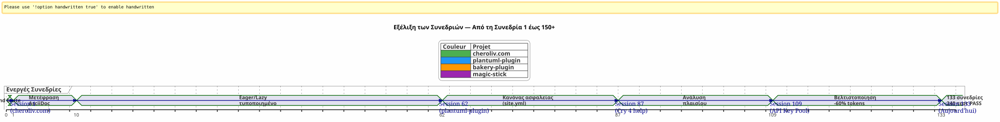
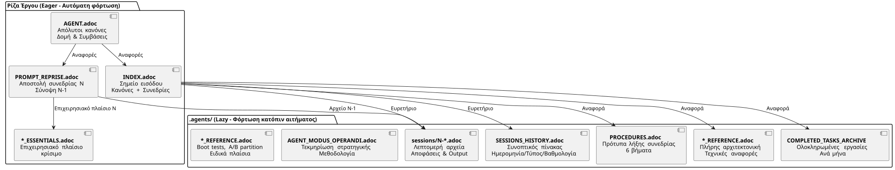

Διακυβέρνηση ενός AI Agent με AsciiDoc: Η Στρατηγική Eager/Lazy μου για Sessions Opencode χωρίς Διαρροή Πλαισίου
Δημοσιεύτηκε 24 April 2026
Περίληψη
Όταν εργάζεστε με έναν παράγοντα ΤΙ όπως το Opencode σε πολύπλοκα έργα σε muitas συνεδρίες, αντιμετωπίζετε ένα θεμελιώδες πρόβλημα:η διαρροή του περιβάλλοντος. Ο πρακτόρος δεν θυμάται την προηγούμενη συνεδρία. Όλα του εξηγήθηκαν — η αρχιτεκτονική, οι συνθήκες, η κατάσταση του backlog — χάθηκαν. Η επανακατασκευή αυτού του πλαίσια σε κάθε συνεδρία είναι κοστώδης, αργός και πηγή σφάλματος.
Αυτό το άρθρο παρουσιάζει τη χειροτεχνική στρατηγική που έχω φτιάξει για να λύσω αυτό το πρόβλημα : ένα διαρκών σύστημα διακυβέρνησης βάσει αρχείων AsciiDoc, με μια διχοτομίαενθουσιώδης/τεμπέληςγια να βελτιστοποιήσει την κατανάλωση του token του περιβάλλοντος, και μιάαπαραίτητη διαδικασία τελούς συνεδρίαςγια να διασφαλιστεί η συνέχεια.
Η σκηνή : Δευτέρα 21 Απριλίου, 9:00
Ξανοίγω το Opencode για να συνεχίσω το plugin Gradle μου`plantuml-plugin`. Χθες το βράδυ, πέρασα τρεις ώρες συζητώντας με τον εージεν της αρχιτεκτονικής του pool των κλειδιών API — στροφή round‑robin, διαχείριση ορίων, αυτόματο fallback. Πρωί, ο εージεν με κοιτάει με μάτια χρυσοψαρίδας.
_ — Γεια σας, είμαι ο βοηθός σας Opencode. Πώς μπορώ να σας βοηθήσω σήμερα; _
Όχι — Αχ ναί, το παρκέ κλειδιών API, ήμασταν στη δομή YAML. Όχι — Προσοχή,PlantumlManager`είναι ένα αντικείμενο singleton Kotlin, όχι μια κλάση. Όχι — Όχι, αποφασίσαμε χθες ότι`SyntaxValidationResult`έμενε μια sealed class nested στο`PlantumlService.
Πρέπει να το κάνουμε από την αρχή. Or rather: Πρέπει να το εξηγήσουμε ξανά. Θα περάσω τα είκοσι πρώτα λεπτά της συνεδρίας μου ανακατασκευάζοντας ένα πλαίσιο που ο πράκτωρας είχε ήδη στα χέρια χθες. Είκοσι λεπτά καμένων tokens. Είκοσι λεπτά όπου θα μπορούσα να γράψω κώδικα, αλλά κάνω υποχρεωτική παιδαγωγική δουλειά.
Αυτό δεν είναι ένας bug του Opencode. Είναι η ίδια η φύση των συνομιλητικών LLM: μεταξύ δύο συνεδριών, η ενεργική μνήμη είναιολόκληρα εξαλειφμένη. Ο πράκτορας δεν θυμάται την προηγούμενη αποστολή, τις αποφάσεις που πήραμε, τις παγίδες που εντοπίσαμε, τον κώδικα που γράψαμε μαζί.
Έζησα αυτό δεκάδες φορές. Σε τέσσερα ταυτόχρονα έργα. Με συνεδρίες που αλληλοεπιβαίνουν για εβδομάδες. Υπολόγισα : στο μέσο όρο,30% - 40% του χρόνου της συνεδρίαςήταν αφιερωμένο στην επανασυγκρότηση του πράκτορα.στη 87η συνεδρία του έργου.plantuml-plugin, έσπαγα. Δε μπορούσα πια να εισηγώ για την δέκατο φορά που`AttemptEntry`είναι μια κορυφαία κλάση δεδομένων σε`DiagramProcessor.kt`.
Μου χρειάζονταν ένα σύστημα. Δεν ήταν ένα hack. Μια αληθινή διακυβέρνηση.
Η Γένεση: Από το Χάος στην Μέθοδο
Οι πρώτες συνεδρίες: Η εποχή του σκοταδιού
Το πρώτο μου έργο με το Opencode,plantuml-plugin, έναρxe χωρίς καμία διακυβέρνηση. Κάνω μια ερώτηση, ο πράκτορας απανθεί, επαναλαμβάνουμε, η συνεδρία τελειώνει, και την επόμενη μέρα ξεκινάμε από το μηδέν. Η συνεδρία 1, μετά η 2, μετά η 3… μέχρι τη συνεδρία 62 όπου αντιλαμβάνομαι ότι έχασα ώρες επεξηγώντας πάλι την ίδια αρχιτεκτονική.
Στο συνεδρίαση 62, οι αριθμοί είναι εδώ :198 μονάδες τεστ περνούν, 42 τεστ λειτουργιών επιβεβαιωμένα, το πρόσθετο λειτουργεί. Όμως ο γνωστικός κόστος είναι ανεξίστατο. Κάθε νέα συνεδρία ξεκινά με ένα μονόλογο είκοσι λεπτών για τη δομή του έργου.
Το επεισόδιο του site.yml καταστράφηκε (Συνεδρία 2, bakery-plugin)
Η μέθοδος προκύπτει και από μια καταστροφή. Στο έργο`bakery-gradle`, στη συνεδρία 2, ζητώ από τον πρακτόρα να τροποποιήσει το αρχείο`site.yml`. Ο πράκτορας, χωρίς να ελέγξει αν το αρχείο είναι εκδοσμένο, κάνει ένα`Write`πλήρες που υπεργραμματίζει το περιεχόμενο. Αποτέλεσμα:οι πραγματικοί tokens (κλειδιά API Firebase, μυστικά ανάπτυξης) αντικαθίστανται από ψεύτικα placeholders. Το αρχείο δεν ήταν στο git — był στο`.gitignore`για να προστατεύουν τα μυστικά.
Χωρίς αντίγραφα ασφαλείας. Χωρίς`git restore`δυνατόν. Είμαι κολλημένος. Prepei na to ξαναχτισω χειροκίνητα το αρχείο ρυθμίσεων, να βρω τους tokens στους διαχειριστές μου κωδικών, να το κολλήσω ξανά.
Από αυτή τη απογοήτευση γίνεται ηΚανόνας Απόλυτος 1b :
_ ΜΗΝ ΣΦΡΙΓΝΙΖΕΤΕένα αρχείο config με ένα`Write`πλήρης όταν ένας`Edit`Το μερικό αρκεί.Μην ποτέ αντικαταστήσετετιμές ευαίσθητες με ψεύτικες τιμές.Ελέγξτε git check-ignore και `git ls-filesπριν από κάθε αλλαγή _
Αυτή η κανόνα, σήμερα γεγραμμένη στον λίθο από όλα τα αρχεία μου`AGENT.adoc` et `INDEX.adoc`σε τέσσερα έργα, εγίνε από μια πραγματική λάθος που μου costat μια ώρα χειροκίνητης εργασίας.
Η Μεταφορά Markdown → AsciiDoc (Συνεδρία 1, cheroliv.com)
Το 25 Απριλίου 2026, σε`cheroliv.com`, παίρνω μια ριζική απόφαση: μετατρέπω όλη τη διακυβέρνηση του Markdown σε AsciiDoc. Δεν είναι αισθητικό. Είναι λειτουργικό. Το AsciiDoc παρέχει μια semantική δομή που τα LLM τη διαβάζουν καλύτερα: ιεραρχικές ενότητες, τυποποιημένοι πίνακες, προειδοποιήσεις (NOTE, WARNING, CAUTION), μηχανόγραφα χαρακτηριστικά εγγράφου.
Η συνεδρία 1 του`cheroliv.com`τυποποιεί τη δομή :
-
Μετατροπή του`AGENTS.md` en
AGENT.adoc -
Δημιουργία ειδικευμένων αντιπροσώπων :`CODER.adoc`,
SCRUM_MASTER.adoc,PLANTUML_DESIGNER.adoc -
Δημιουργία της δομής Eager/Lazy :`INDEX.adoc`,
SESSIONS_HISTORY.adoc,AGENT_SESSION_MANAGER.adoc,SESSION_CHECKLIST.adoc,PROCEDURES.adoc
Μία μόνο υποβολή:`90975e9 refactor: migrate agent governance from Markdown to AsciiDoc`Και ο ιστότοπος συνεχίζει να λειτουργεί.

Η παραπάνω γραμμή χρόνου δείχνει την πραγματική πρόοδο. Το σημείο στροφής είναι η συνεδρία 87: εκεί είναι όπου η απογοήτευση από την επαναληπτική επαναπροσαρμογή υπερβαίνει το όριο ανεξαρτησίας, και η μέθοδος Eager/Lazy δεν είναι više μια ιδέα, αλλά γίνεται μια υποχρέωση.
Η Στρατηγική: Eager/Lazy σε βάθος
Φιλοσοφία : Cache υπολογιστική εφαρμοσμένη στην γνωστική
Η προσέγγισή μου έμπνεται άμεσα από τη διαχείριση cache υπολογιστή. Όλα όσα είναικριτικός και συχνά χρησιμοποιούμενοςπρέπει να είναι αμέσως προσβάσιμος (Επιθυμητικός). Όλα ό,τι είναισυνδεδεμένος με το πλαίσιο ή βολύμενοςπρέπει να φορτωθεί κατά το αιτημα (línos)
Eager (πίνακας ελέγχου) |
Lazy (Εγχειρίδιο Ιδιοκτήτη) |
Μέγεθος |
< 100 γραμμές, < 10k tokens |
απεριόριστος, λεπτομερής |
Φόρτωση |
Αυτό, στην έναρξη της συνεδρίας |
Σε αίτηση του πράκτορα |
Περιεχόμενο |
Απαράβατοι κανόνες, τρέχουσα αποστολή, κρίσιμη κατάσταση |
Αρχεία συνεδριών, πλήρες ιστορικό, λεπτομερείς διαδικασίες, τεχνικές αναφορές |
Ρόλος |
Οδηγήστε αμέσως τον πράκτορα |
Απάντηση στις ερωτήσεις βαθέου συμφραζόμενου |
Τα Αρχεία Eager : Το Πίνακας Ελέγχου
Αρχεία αυτά διαμένουν στη ρίζα κάθε έργο και φορτώνονται αυτόματα από τον άγετ στην αρχή каждой συνεδρίας. Αποτελούν τοπίνακας ελέγχου-- κριτική πληροφορία, άμεσα προσβάσιμη.

AGENT.adoc-- Το κύριο αρχείο. Σε`cheroliv.com`, κάνει 200 γραμμές και περιέχει :
-
Οι απόλυτοι κανόνες του έργου (χωρίς commit χωρίς άδεια, χωρίς`rm`χωρίς επιβεβαίωση)
-
Η δομή του έργου και οι συνήθειες του κώδικα
-
Οι βασικές εντολές (
./gradlew serve,./gradlew test) -
Οι επικές και το backlog προϊόντος (user stories προτεραιοποιημένες)
-
Τα διατμητικά κριτήρια ποιότητας (προσβασιμότητα, ανταποκρινόμενος, συμβατότητα)
σε`bakery-plugin`, ο Κανόνας 0 είναι διαφορετικός :./gradlew -q publishToMavenLocal` υποχρεωτικό μετά από κάθε τροποποίηση του πηγαίου κώδικα. Επειδή το δοκιμάσαι το plugin χωρίς να ανα δημοσιεύσετε το τοπικό JAR μου μου έκανε να χάσω μια ώρα debug τον κώδικα που δεν había ancora πακεταριστέ.
PROMPT_REPRISE.adoc-- Η αποστολή της τρέχουσας συνεδρίας. Ενημερώνεται στο τέλος κάθε συνεδρίας, περιέχει:
-
Ο αριθμός της συνεδρίας και η προτεραιωτική αποστολή
-
Η περίληψη της προηγούμενου συνεδρίας (το που έγινε, το που απομένει να γίνει)
-
Τα κριτήρια αποδοχής της τρέχουσας συνεδρίας
-
Οι ειδικές τεχνικές αναμνήσεις
.agents/INDEX.adocΤο σημείο εισόδου. Συνοψίζει τους απολυτικούς κανόνες, τις πρόσφατες συνεδρίες και, ειδικά, τοportefeuille de έργωνδιαχειριζόμενα με την ίδια μεθοδολογία. Έως σήμερα, πέντε προγράμματα φαίνονται στη λίστα:
----
----
----
| magic-stick | Session 23 | SCRIPT_VERIFICATION.adoc | 2026-04-27 |
| bakery-gradle | Session 11 | TEST_COVERAGE_ANALYSIS | 2026-04-27 |
| cheroliv.com | Session 9 | TEST_COVERAGE_ANALYSIS | 2026-04-27 |
| plantuml-gradle| Session 133| TEST_COVERAGE_ANALYSIS | 2026-04-23 |
| jhipster-gradle-plugins | Session 1 | TEST_COVERAGE_ANALYSIS | 2026-04-28 |
----
**`*_ESSENTIALS.adoc`** -- Μια πρόσφατη προσθήκη (Session 109, plantuml-plugin) για να βελτιώσουμε περαιτέρω το Eager context. Αντί να φορτώσω 200 γραμμές επιχειριακού περιεχομένου στο πουλ των κλειδιών API, φορτώνω 50 γραμμές του ουσιώδους, και οι 150 υπόλοιπες γραμμές παραμένουν σε LAZY μέσα`*_REFERENCE.adoc`.
Μετρημένο αποτέλεσμα : περάσματος του**~25k tokens EAGER σε ~10k tokens**(κέρδος 60%). Ο πράκτορας δεν χρειάζεται πλέον ενεργοβόρους υπενθυμισούς.
==== Το λείπον συνδέσμι : `opencode.json
Πρέπει να σας πω κάτι που σχεδόν ξέχασα να τεκμηριώσω. Πάνω από όλα αυτά τα αρχεία .adoc, υπάρχει ένα μικρό αρχείο JSON χωρίς το οποίο τίποτα δεν λειτουργεί. Το όνομά του είναι`opencode.json`και κάνει έξι γραμμές. Ακριβώς έξι γραμμές.
[source,json]
----
{
"$schema": "https://opencode.ai/config.json",
"instructions": [
"AGENT.adoc"
]
}
----
Αυτό είναι το αρχείο που λέει στον Opencode: « Όταν ξεκινά, φορτώνει`AGENT.adoc`αυτομάτως. » Χωρίς αυτόν, το πρόγραμμα είναι μια λευκή σελίδα ακριβώς όπως το περιέγραφα στην αρχή του άρθρου. Με αυτόν, το πρόγραμμα έχει ήδη στα χέρια του τους απόλυτους κανόνες, την αρχιτεκτονική του έργου και τις βασικές εντολές — ακόμα πριν που το πω «γεια σου».
Εύρεκα τυχαία τη σημασία αυτού του αρχείου. Στο`bakery-plugin`, δεν υπήρχε. Ερωτιούνταν γιατί ο πράκτορας ήταν συστηματικά πιο « χαμένο » σε αυτό το έργο από ότι σε τα άλλα. Οι αβίαστοι κανόνες ήταν καλά στο`AGENT.adoc`— αλλά`AGENT.adoc`Ηταν ποτέ δεν φορωνόταν. Ο πράκτορας διάβανε μόνο αυτό που μου έλεγα να διαβάσει, μη αυτόματα, σε κάθε συνεδρία. Ηταν η συνεδρία 11 του`bakery-plugin`όταν κατάλαβα την απουσία του`opencode.json`. Το έφτιαξα — και η συνεδρία 12 ξεκίνησε όπως όλα τα υπόλοιπα.
Αυτό το αρχείο είναι τόσο προφανές για μένα τώρα που δεν το σκέφτομαι ούτε. Μια κλασική λάθος από έναν προγραμματιστή που γνωρίζει πάρα πολύ το εργαλείο του. Σήμερα, το δημιουργώ συστηματικά *πριν*.`AGENT.adoc`. Αυτό είναι ο λίθος του θεμελιου.
==== Η διπλότητα του `INDEX.adoc
Ένα άλλο λεπτό σημείο που αξίζει να εξηγηθεί`INDEX.adoc`ζει σε`.agents/`— Ένα αρχείο που το παρουσίασα ως LAZY. Ω</tool_call>, το λίσταω ως EAGER σε όλους τους πίνακες μου. Υπάρχει μια φαινομενική τάση εδώ.
Η πρακτική πραγματικότητα : τα αρχεία`.agents/INDEX.adoc`Φορτίζονται αυτόματα και σωστά στην έναρξη της συνεδρίας, như
Wait the Greek word for "like" is "ώς" or "как". "au même titre que" means "just as". Greek: "ως". So better: "ως". So phrase: "... στην έναρξη της συνεδρίας, ως". Let's output that.
Thus: leading space, Greek text, trailing space.
Final: " Φορτίζονται αυτόματα και σωστά στην έναρξη της συνεδρίας, ως " (note spaces). Ensure no extra.
</think>
Φορτίζονται αυτόματα και σωστά στην έναρξη της συνεδρίας, ως`AGENT.adoc` et `PROMPT_REPRISE.adoc`. Είναι σε`.agents/`για λόγους οργάνωσης — να μην επεκτείνουν τη ρίζα — αλλά η συμπεριφορά τους είναι EAGER.
επί`plantuml-plugin`, `INDEX.adoc`έχει 200 γραμμές και περιλαμβάνει τις απόλυτες κανόνες *ολοκληρωτές* με το ιστορικό τους (τα μαθήματα των προηγουμένων συνεδριών), τα EPICs με scores, και το χαρτοφυλάκιο των project. Αυτό είναι το έγγραφο που ο πράκτορας διαβάζει για να ξέρει «που βρισκόμαστε». επί`bakery-plugin`, κάνει 150 γραμμές με το roadmap και τις πρόσφατες συνεδρίες.
Η εθελοντική υπερβολία μεταξύ`AGENT.adoc` et `INDEX.adoc`μπορεί να εντυπωσιάσει. Οι απόλυτες κανόνες είναι παρόντες σε και τα δύο. Γιατί; Επειδή που καλύπτουν δύο διαφορετικούς ρόλους : σε`AGENT.adoc`, είναι *εξηγητικές* (η διηγεστική του κανόνα, το μάθημα που έμαθα) ; σε`INDEX.adoc`, είναι *εκτελεστικές* (ο γυμνό κανόνας, χωρίς δικαιολογία, για γρήγορη συμβουλευτική). Ο πράκτορας διαβάζει`AGENT.adoc`Μια φορά για να καταλάβει; ο επαναβλέπει`INDEX.adoc` à chaque session pour *appliquer*. Deux usages, deux formats.
[plantuml, format=svg, id=diag-dualite-agent-index, alt="Comparaison entre AGENT.adoc (narratif) et INDEX.adoc (exécutif)"]
----
@startuml
skinparam backgroundColor #FEFEFE
skinparam defaultTextAlignment center
title Διπλοτύτητα AGENT.adoc ←→ INDEX.adoc
left to right direction
rectangle "AGENT.adoc\n(Ρίζα — EAGER)" as AGENT #E3F2FD {
rectangle "📖 **Διηγητική μορφή**\nΗ διήγηση του κανόνα\nΤο μάθημα που μάθαμε, το πλαίσιο" as NARR
rectangle "🏗️ **Πλήρης Αρχιτεκτονική**\nΔομή έργου, συστατικά\nΛεπτομερής backlog US" as ARCHI
rectangle "📋 **Επεξηγητικοί Κανόνες**\nΓιατί υπάρχει ο κανόνας;\nΙστορικό του συμβάντος" as EXPL
}
rectangle "INDEX.adoc\n(.agents/ — EAGER)" as INDEX #E8F5E9 {
rectangle "⚡ **Εκτελεστική μορφή**\nΟ γυμνός κανόνας, χωρίς δικαιολογία\nΓρήγορη σύμβουλη" as EXEC
rectangle "📊 **Roadmap & EPICs**\nΣυνοπτικός πίνακας\nΠρόοδος, Βαθμολογία, Προτεραιότητα" as ROAD
rectangle "🌐 **Πορτοφολιό Έργων**\nδιασχιστική όψη\n5 συγχρονισμένα έργα" as PORT
}
AGENT --> INDEX : "Agent διαβάζει AGENT.adoc\n1 φορά για να καταλαβαίνει"
INDEX --> AGENT : "Ο πράκτορας ξαναδιαβάζει το INDEX.adoc\nκάθε συνεδρία για **εφαρμογή**"
note bottom of AGENT
Taille max : 200 lignes
end note
note bottom of INDEX
Taille max : 200 lignes
Source de vérité en cas de divergence
end note
@enduml
----
Αυτή η υποθέμενη redundance είναι μια σχεδιαστική επιλογή. Καταναλώνει περίπου 50 επιπλέον γραμμές tokens EAGER — αλλά εξασφαλίζει ότι ο πρακτόρας έχει πάντα τους κανόνες μπροστά του, συμπεριλαμβανομένου και του συντομογραφημένου μορφοτύπου που διευκολύνει την άμεση υπακοή.
=== Τα αρχεία LAZY : Το εγχειρίδιο του ιδιοκτήτη
Αυτά τα αρχεία ζουν στο`.agents/`και δεν διαβάζονται μόνο όταν ο πράκτορας τα χρειάζεται. Συνιστάουν τον αληθινό πλούτο της μεθόδου, επειδή συγκεντρώνουν τη γνώση του έργου χωρίς να μολύνουν το τρέχον περιβάλλον.
[plantuml, format=svg, id=diag-agents-tree, alt="Arborescence complète du dossier .agents/"]
----
@startuml
skinparam folderBackgroundColor #E3F2FD
skinparam folderBorderColor #1565C0
skinparam fileBackgroundColor #FFF3E0
skinparam fileBorderColor #EF6C00
folder ".πρόσωπα/" as ROOT {
file "INDEX.adoc\n(EAGER -- 200 γραμμές)" as IDX #E8F5E9
file "AGENT_SESSION_MANAGER.adoc\n(Πρότυπη συνεδρία)" as ASM
file "SESSION_CHECKLIST.adoc\n(Ποτε να αλλάξετε)" as CHK
file "PROCEDURES.adoc\n(6 βήματα + LAZY/EAGER)" as PRO
file "SESSIONS_HISTORY.adoc\n(όλες οι συνεδρίες)" as HIS
folder "συνεδρίες/" as SESS {
file "1-chore-migration.adoc" as S1
file "109-τυποποίηση-αχαλαρός.adoc" as S109 #FFECB3
file "133-epic11-article.adoc" as S133
file "... +130 άλλα" as SMORE
}
folder "αρχεία/" as ARCH {
file "COMPLETED_TASKS_2026-04.adoc" as CTA
file "SESSIONS_HISTORY_83-95.adoc" as SHIST
folder "περιλήψεις_συνεδριών/" as SUM {
file "SESSION_64_SUMMARY.adoc" as SU64
file "SESSION_73_SUMMARY.adoc" as SU73
file "..." as SUMORE
}
folder "prompts_archive/" as PARCH {
file "PROMPT_REPRISE_S65.adoc" as PR65
file "PROMPT_REPRISE_S75.adoc" as PR75
file "..." as PMORE
}
}
}
IDX --> SESS : "Ευρετογραφεί"
IDX --> HIS : "Ευρετογραφεί"
IDX --> ARCH : "Αναφορά"
note right of S109
Session 109 =
Formalisation stratégie
LAZY/EAGER
Token : ~25k → ~10k
end note
@enduml
----
Η δομή παραπάνω δείχνει την πραγματική δομή του φακέλου`.agents/`σε`plantuml-plugin`, το πιο εξελιγμένο έργο. Σημειώστε το βάθος σε τρία στρώματα: αρχεία ρίζα (μεταδεδομένα), φάκελος`sessions/`(χρονικά αρχεία), και φάκελος`archives/`(συνοψίσεις και περιλήψεις). Αυτό το βάθος μετατρέπει τη διακυβέρνηση από ένα απλό αρχείο TODO σε μια**πλήρης οργανωτική μνήμη**.
**.agents/sessions/{N}-{titre}.adoc**-- Οι λεπτομερείς αρχεία κάθε συνεδρίας. Τώρα:
* `plantuml-plugin`:**133 αποθηκευμένες συνεδρίες**(από τη συνεδρίαση 1 έως 133)
* `bakery-plugin`:**11 συνεδρίες**
* `magic-stick` : **23 συνεδρίες**
* `cheroliv.com`:**9 τυπικές συνεδρίες**+ 7 sessions προ-συστημικές ανακατασκευασμένες ρητροακτιβώς
Κάθε αρχείο περιλαμβάνει το πλήρες περιεχόμενο της συνεδρίας, τις ληφθείς αποφάσεις, τα αντιμετωπισμένα προβλήματα και τη λύσή τους, τις εκτελεσθείς εντολές και το output τους.
**.agents/SESSIONS_HISTORY.adoc**-- Ένας πίνακας σύνοψης όλων των συνεδριών με βαθμό. Παράδειγμα σε`cheroliv.com`:
----
| -6 | 2025-05 | chore | Initialisation projet Gradle/JBake | 7/10 | 1 | 2026-04-25 | chore | Migration gouvernance agent | 8/10 | 7 | 2026-04-27 | debug/fix | Correction publishSite | 9/10 | 8 | 2026-04-27 | analyse | Analyse article 0108 | 7/10
**.agents/COMPLETED_TASKS_ARCHIVE_{mois}.adoc**Οι τελειωμένες εργασίες αρχειοθετούνται ανά μήνα, για να μην φορτίζουν το ενεργό backlog. Όταν μια user story τελειώνει, μεταφέρεται εδώ. Το backlog παραμένει αναγνώσιμο: μέγιστος 10 ενεργά στοιχεία.
**.agents/PROCEDURES.adoc**-- Λεπτομερείς πρότυπα της διαδικασίας λήξης της συνεδρίας. Μακρύ, αλλά διαβαστεί μόνο μία φορά από τον πράκτορα όταν μάθει τη μέθοδο. Στη συνέχεια, η διαδικασία γίνεται μηχανική.
**.agents/AGENT_MODUS_OPERANDI.adoc**-- Η πλήρης στρατηγική τεκμηρίωση. Σε`plantuml-plugin`, Το αρχείο κάνει**900+ γραμμές**και ονομάζεται πράγματι`AGENT_METHODOLOGIES.adoc`— Έχω αλλάξει το όνομα μεταξύ της γραφής αυτού του άρθρου και της εφαρμογής. Αυτό το είδος ανωμαλίας ονόματος είναι αναποφεύκτικο σε ένα τεχνικό σύστημα που εξελίσσεται. Το σημαντικό είναι η σύσταση ονοματοδότησης: αν το αρχείο τεκμηριώνει τη *méthode*, ξεκινά με`AGENT_`ή ένα ρητό πρόθεμα. Το εγγράφει τη μεθοδολογία Eager/Lazy, τα patterns που πρέπει να ακολουθηθούν, τα anti-patterns που πρέπει να αποφευχθούν. Είναι LAZY επειδή ένας agent δεν χρειάζεται να διαβάσει ξανά όλη τη στρατηγική σε κάθε συνεδρία, μόνο όταν υπάρχει αμβιβολία.
(Empty output)`*_REFERENCE.adoc`** -- Οι τεχνικές αναφορές ειδικές για το έργο. Στο`magic-stick`, δύο αρχεία LAZY πυκνά :
* `AB_PARTITION_REFERENCE.adoc`(147 γραμμές) -- Αρχιτεκτονικήμερίδια A/B GPT, σενάρια`update-system.sh`, εκτίμητες διαστάσεις, μηχανισμός επαναφοράς
* `BOOT_TEST_REFERENCE.adoc`(144 γραμμές) -- Διαδικασία QEMU + VNC για να δοκιμάσετε το boot του ISO χωρίς φυσικό υλικό, λίστα ελέγχου BIOS/UEFI, περιορισμοί CI/CD
επί`plantuml-plugin` :
* `ARCHITECTURE.adoc`(134 γραμμές) -- Δομή των 11 κλάσεων δεδομένων, σημεία προσοχής (παγίδες προς αποφυγή), βελτιστοποιημένες εντολές δοκιμής
* `API_KEY_POOL_REFERENCE.adoc`-- Πλήρεις λεπτομέρειες του pool κλειδιών (LAZY ενώ`ESSENTIALS`είναι EAGER)
== Οι ειδικευμένοι πράκτορες: Μια εικονική ομάδα
Ηκυβέρνηση δεν περιορίζεται μόνο σε αρχεία αδράνειας. Έχω καθορισμένα**ρόλους εξειδικευμένων πρακτόρων**σε αρχεία LAZY ειδικά, που ορίζουν τον αναμενόμενο ροή εργασίας ανάλογα με τον τύπο εργασίας.
|===
|πρόσωπο |Αρχείο |Ρόλος |έργο |**κωδικοποιώ** |`CODER.adoc` |Υλοποίηση FTL/CSS/JS, σεμαντικές ετικέτες, κριτήρια προσβασιμότητας |cheroliv.com |**Κυβερνητής SCRUM** |`SCRUM_MASTER.adoc` |Σχεδιασμός ΗΠΑ, διαχωρισμός σε υποκαταδιεργασίες, ανίχνευση εξαρτήσεων |cheroliv.com |**Σχεδιαστής PlantUML** |`PLANTUML_DESIGNER.adoc` |Δημιουργία διαγραμμάτων, σύνταξη PUML, ενσωμάτωση JBake |cheroliv.com
|===
Το αρχέιο`CODER.adoc`σε`cheroliv.com`περιέχει συγκεκριμένους κανόνες : _Μόνος`<h1>`ανά page_, _Προσθέστε το πρόθεμα στις διαδρομές με`${content.rootpath}`_, _Δηλώστε τη γλώσσα`<html lang="${content.lang!"fr"}">`_. Αυτές οι συμβάσεις, γραμμένες μια φορά, τηρούνται αυτόματα από τον πράκτορα από τη συνεδρίαση 1.
Το αρχείο`SCRUM_MASTER.adoc`υποβάλλει μια δομή παρόδου:**Στόχος**, **Έργασίες**(συντεταγμένες με εκχώρηση),**Κριτήρια αποδοχής**, **Κινδύνοι**. Όταν ζητώ ένα σχέδιο ενέργειας, ο πράκτορας παράγει αυτή τη δομή χωρίς να το ζητήσω. Η διακυβέρνηση**πρόγραμμα**ο πράκτορας.
==== Όταν οι ειδικοί πράκτορες γίνονται απαραίτητοι
Η δημιουργία των ειδικευμένων παραγόντων ακολουθεί μια φυσική καμπύλη. Στην αρχή ενός έργου, δεν το χρειάζεστε —`AGENT.adoc`αρκεί πολύ. Αλλά όταν το πρότζεκτ μεγαλώνει (π.χ., πέρα από 20 συνεδρίες), δύο σήματα θα πρέπει να σας προειδοποιήσουν:
1. Ο πράκτορας αναμειγνύει τις συνθήκες δύο διαφορετικούς τομείς (π.χ., η σύνταξη PlantUML και οι κανόνες CSS)
2. Απαιτείτε περισσότερο χρόνο να διορθώνετε τον πράκτορα για τις σύμβασεις που του έχετε εξηγήσει ήδη 5 φορές.
σε`cheroliv.com`, έφτασε στη συνεδρία... 1. Ναι, από την αρχή. Επειδή αυτό το έργο είναι ένας ιστότοπος με τρεις γλώσσες (FTL, CSS, JS), περιεχόμενο AsciiDoc, και διαγράμματα PlantUML — τρεις τομείς που δεν έχουν σχέση. Ο πρόκτορος CODER χρειάζεται να γνωρίζει τα μεγέθη γραμματοσειράς και τις media queries ; ο πρόκτορος PLANTUML_DESIGNER χρειάζεται να γνωρίζει τη σύνταξη`@startuml`. Χωρίς χωρισμός, ο πρακτόρας CODER μου πρότεινε διαγράμματα, και το αντίστροφο. Ο χάος.
επί`jhipster-gradle-plugins`, έ δημιούργησα δύο ειδικευμένους πράκτορες προσαρμοσμένους για την ανάπτυξη plugin Gradle :`PLUGIN_DEVELOPER.adoc` et `BACKLOG_MANAGER.adoc`. Ο πρώτος κωδικοποιεί όλους τους κανόνες Kotlin/Gradle (δεν`!!`, data classes για τα μοντέλα,`@TaskAction`για τις εργασίες). Ο δεύτερος ξέρει ότι`persistence`πρέπει να είναι σταθερό πριν από`assistant`ne δεν ξεκινάει την ανάπτυξής του — μια κρίσιμη εξάρτηση σε ένα mono-repo.
Το λάθος που πρέπει να αποφεύγετε: να δημιουργήσετε πολλά πρόσωπα πολύ νωρίς.`plantuml-plugin`Περιμένει την συνεδρία 108 πριν τον ορισμό ενός ειδικευμένου πρακτόρα για το σύνολο των κλειδιών API. Πριν από αυτό, ο επιχειρηματικός πλαίσιο συγκροτούσε σε`AGENT.adoc`. Ο empirικός κανόνας: ένας εξειδικευμένος πράκτορας δικαιολογείται όταν το επαγγελματικό τομέα του υπερβαίνει τις 100 γραμμές τεκμηρίωσης.
==== Συμφωνία ονοματοδότησης των συνεδριάσεων
Μια λεπτομέρεια που φαίνεται ασήμαντη αλλά γίνεται κρίσιμη όταν φτάνετε στις 100 συνεδρίες. Πώς να ονομάσετε τα αρχεία αρχειοθέτησης;
Έμαθα με τον σκληρό τρόπο ότι η σύσταση είναι απαραίτητη — τέσσερα έργα, τέσσеры διαφορετικοί τύποι στην αρχή, και δεν βρισκόμαι πια. Σήμερα, η σύσταση που έχω σταθεροποιήσει είναι :
----
{N}-{type}-{sujet-kebab-case}.adoc
Συγκεκριμένα παραδείγματα :
* `1-chore-migration-gouvernance-agent.adoc`— έнеδρα 1, typo...
* `10-solidification-tests.adoc`— session 10, χωρίς ρηκό τύπο (το θέμα επαρκεί)
* `036-debug-graphify-symlink-epic9.adoc`— συνεδρία 36 με τριψήφιο αριθμό για ταξινόμηση
Ο αριθμός της συνεδρίας είναι το κύριο κριτήριο ταξινόμησης. Τα έργα που χρησιμοποιούν αριθμητικούς κωδικούς τριών ψηφίων (001, 036, 133) αποφεύγουν τα προβλήματα lessicografικού ταξινόμησης όταν ο αριθμός υπερβαίνει το 99. Αυτό είναι αυτό που τώρα χρησιμοποιώ στο`magic-stick` : `001-init-projet.adoc`, `036-debug-graphify-symlink-epic9.adoc`.
Ο τύπος είναι προαιρετικός και προκύπτει από τις λέξεις-κλειδιά της συνεδρίας (debug, feature, refactor, docs, chore, test). Το θέμα σε kebab-case είναι το πιο σημαντικό μέρος: πρέπει να επιτρέπει την εντοπισμό μιας συνεδρίας χωρίς να ανοίξετε το αρχείο. Αν ερωτᾶστε « ποια była η συνεδρία στην οποία διορθώσαμε το timeout των ενοδομημένων δοκιμών; », η απάντηση είναι`124-fix-timeout-integration-test.adoc`.
Για τις ιστορικές ανακατασκευασμένες συνεδρίες (έργα που γεννήθηκαν πριν από τη διακυβέρνηση), χρησιμοποιώ αρνητικούς αριθμούς. Έπί`cheroliv.com`, οι συνεδρίες -6 έως 0 καλύπτοουν όλη την προκυβερνητική ιστορία του έργου. Και για τις συνεδρίες « μη τεκμηριωμένες » ή χαμένες, δημιουργώ μια εγγραφή στο`SESSIONS_HISTORY.adoc`χωρίς αντίστοιχο αρχείο, με μια βαθμολογία`?`. Είναι πιο ευπρόσωπος από το να φαίνεται.
[plantuml, format=svg, id=diag-naming-convention, alt="Arbre de décision pour le nommage des fichiers de session"]
----
@startuml
skinparam backgroundColor #FEFEFE
skinparam defaultTextAlignment center
skinparam wrapWidth 200
title Συνταγόρα Ονομασίας Σεσσιών
start
:Une session se termine;
note right: Trigger "τέλος της συνεδρίας"
if (Session antérieure\nà la gouvernance ?) then (oui)
:Numéro **NÉGATIF**\n-6, -5 ... 0;
note right: Historique\nreconstitué
:Suffixe : reconstitution;
else (non)
:Numéro **POSITIF**\nsur 3 chiffres si > 99;
note right: 001, 036, 133\npour le tri lexicographique
:Détecter le **TYPE**;
if (Mots-clés trouvés ?) then (oui)
:debug / feature / refactor\ndocs / chore / test;
else (non)
:Omettre le type\n(le sujet suffit);
endif
:Formuler le **SUJET** en kebab-case;
note right
Ex: fix-timeout-integration-test
Doit permettre de retrouver
sans ouvrir le fichier
end note
endif
:Nom final : {N}-{type}-{sujet}.adoc;
note right
• 1-chore-migration-gouvernance.adoc
• 036-debug-graphify-symlink.adoc
• 124-fix-timeout-integration-test.adoc
• 133-epic11-article-blog-kg.adoc
end note
if (Session documentée ?) then (oui)
:Créer archive dans sessions/;
:Ajouter ligne SESSIONS_HISTORY\navec score X/10;
else (non)
:Ajouter ligne SESSIONS_HISTORY\navec score **?**\n**sans archive**;
note right: L'honnêteté\nplutôt que le vide
endif
stop
@enduml
----
==== TEST_COVERAGE_ANALYSIS.adoc` — Βήμα 5: Λεπτομερής ανάλυση
Το βήμα 5 της διαδικασίας τελειώδους συνεδρίες είναι το πιο μυστήριο. Λέει « Ενημέρωση`TEST_COVERAGE_ANALYSIS.adoc`εάν έχουν προστεθεί ή τροποποιηθεί κάποια δοκιμές. » αλλά πώς φαίνεται αυτό το αρχείο;
σε`plantuml-plugin`, το εξέλιξε από μερικές γραμμές σε μια πλήρη δομή. Αυτή είναι η σταθεροποιημένη μορφή του :
[source]
----
= Analyse de Couverture de Tests
== Suivi des Tests
|===
| Classe de test | Type | Tests | Statut | Dernière MAJ
| PlantumlServiceTest | unit | 45/45 | ✅ PASS | 2026-04-23
| ApiKeyPoolTest | integration | 15/15 | ✅ PASS | 2026-04-20
|===
== Historique par Session
| Session | Tests ajoutés | Tests modifiés | Couverture
| 133 | 0 | 2 | 100%
| 132 | 5 | 0 | 100%
|===
----
Το ενδιαφέρον δεν είναι το αρχείο μόνο — είναι η υποχρέωση να *σημειώσετε* τι άλλαξε. Χωρίς αυτό το βήμα, μετά από 50 συνεδρίες, δεν ξέρετε ποιοι τεστ καλύπουν τι. Ο πρακτόρας ούτε. Το αρχείο γίνεται η μοναδική πηγή αλήθειας για την κάλυψη τεστ του έργου.
Για τα έργα χωρίς παραδοσιακούς τεστ (όπως`magic-stick`ο οποίο ελέγχει σενάρια bash), το βήμα 5 αντικαθιστάται από`SCRIPT_VERIFICATION.adoc`. Το μηχανizam είναι το ίδιο: ένα αρχείο που παρακολουθεί την κατάσταση έλεγχου των σεναρίων. Προσαρμόστε το βήμα 5 στο έργο σας, αλλά μην το παραλείπετε ποτέ. Είναι το ασφαλές δίκτυο που αποτρέπει τη σιωπηλή regres.
[plantuml, format=svg, id=diag-dualite-agent-index, alt="Comparaison entre AGENT.adoc (narratif) et INDEX.adoc (exécutif)"]
----
@startuml
skinparam backgroundColor #FEFEFE
skinparam defaultTextAlignment center
title Δυαδικότητα AGENT.adoc ←→ INDEX.adoc
left to right direction
rectangle "AGENT.adoc\n(Ρρίζα — EAGER)" as AGENT #E3F2FD {
rectangle "📖 **Αφηγηματική Μορφή**\nΤο storytelling του κανόνα\nτο μάθημα που αποκτήθηκε, το πλαίσιο" as NARR
rectangle "🏗️ **Πλήρης Αρχιτεκτονική**\nΔομή έργου, εξαρτήματα\nΛεπτομερές Backlog US" as ARCHI
rectangle "📋 **Επεξηγηματικοί Κανόνες**\nΓιατί υπάρχει ο κανόνας\nΙστορικό του περιστατικού" as EXPL
}
rectangle "INDEX.adoc\n(.agents/ — EAGER)" as INDEX #E8F5E9 {
rectangle "⚡ **Εκτελεστική Μορφή**\nΟ κανόνας γυμνός, χωρίς αιτιολόγηση\nΓρήγορη διαβουλεύση" as EXEC
rectangle "📊 **Roadmap & EPICs**\nΣυνοπτικός πίνακας\nΠρόοδος, Score, Προτεραιότητα" as ROAD
rectangle "🌐 **Χαρτοφυλάκιο Έργων**\nΔιοχιακή προβολή\n5 συγχρονισμένα έργα" as PORT
}
AGENT --> INDEX : "Ο Agent διαβάζει το AGENT.adoc\n1 φορά για να **κατανοήσει**"
INDEX --> AGENT : "Ο Agent ξαναδιαβάζει το INDEX.adoc\nκάθε συνεδρία για να **εφαρμόσει**"
note bottom of AGENT
Μέγιστο μέγεθος: 200 γραμμές
end note
note bottom of INDEX
Μέγιστο μέγεθος: 200 γραμμές
Source de vérité en cas de divergence
end note
@enduml
----
[plantuml, format=svg, id=diag-session-flow, alt="Flux d'une session type avec Eager/Lazy et agents"]
----
@startuml
skinparam backgroundColor #FEFEFE
start
:Début session;
note right: L'agent est une page blanche
:Chargement EAGER auto;
note right
* AGENT.adoc (règles absolues)
* PROMPT_REPRISE.adoc (mission N)
* INDEX.adoc (état projet)
end note
if (Mission claire ?) then (oui)
:Exécution directe;
else (non)
:Charge LAZY sur demande;
note right
* SESSIONS_HISTORY.adoc (contexte passé)
* sessions/{N-1}-*.adoc (décisions)
* *_REFERENCE.adoc (architechture)
end note
endif
:Délégation agent spécialisé ?;
if (CODER ?) then (oui)
:Lit CODER.adoc;
:Suit conventions FTL/CSS;
elseif (SCRUM Master ?) then (oui)
:Lit SCRUM_MASTER.adoc;
:Structure livrable imposée;
elseif (PlantUML ?) then (oui)
:Lit PLANTUML_DESIGNER.adoc;
:Syntaxe PUML + intégration;
else (non)
endif
:Travail de la session;
:Fin de session (trigger utilisateur);
:Procédure 6 étapes;
note right
1. Archive sessions/N-*.adoc
2. Maj PROMPT_REPRISE.adoc (N+1)
3. Maj SESSIONS_HISTORY.adoc
4. Maj INDEX.adoc
5. Maj TEST_COVERAGE (si applicable)
6. Maj COMPLETED_TASKS_ARCHIVE.adoc
end note
:Checklist [✅] x 6;
stop
@enduml
----
Το διάγραμμα παραπάνω εμφανίζει τον πλήρη κύκλο ζωής μιας σένας. Το κλειδί σημείο είναι η διχοτόμηση μετά το φορτίο EAGER: είτε η αποστολή είναι αρκετά σαφής για άμεση εκτέλεση (80% των περιπτώσεων), είτε ο παράγοντας φορτώνει το LAZY για να λύσει μια ασαφήνεια (20% των περιπτώσεων). Αυτή η διάκριση εξοικονομεί τα tokens.
== Η διαδικασία λήξης της συνεδρίας: Ο χρυσός κανόνας
[plantuml, format=svg, id=diag-agents-tree, alt="Arborescence complète du dossier .agents/"]
----
@startuml
skinparam folderBackgroundColor #E3F2FD
skinparam folderBorderColor #1565C0
skinparam fileBackgroundColor #FFF3E0
skinparam fileBorderColor #EF6C00
folder ".agents/" as ROOT {
file "INDEX.adoc\n(EAGER -- 200 γραμμές)" as IDX #E8F5E9
file "AGENT_SESSION_MANAGER.adoc\n(Πρότυπο συνεδρίας)" as ASM
file "SESSION_CHECKLIST.adoc\n(Πότε να αλλάξετε)" as CHK
file "PROCEDURES.adoc\n(6 βήματα + LAZY/EAGER)" as PRO
file "SESSIONS_HISTORY.adoc\n(Όλες οι συνεδρίες)" as HIS
folder "sessions/" as SESS {
file "1-chore-migration.adoc" as S1
file "109-formalisation-lazy.adoc" as S109 #FFECB3
file "133-epic11-article.adoc" as S133
file "... +130 άλλα" as SMORE
}
folder "archives/" as ARCH {
file "COMPLETED_TASKS_2026-04.adoc" as CTA
file "SESSIONS_HISTORY_83-95.adoc" as SHIST
folder "sessions_summaries/" as SUM {
file "SESSION_64_SUMMARY.adoc" as SU64
file "SESSION_73_SUMMARY.adoc" as SU73
file "..." as SUMORE
}
folder "prompts_archive/" as PARCH {
file "PROMPT_REPRISE_S65.adoc" as PR65
file "PROMPT_REPRISE_S75.adoc" as PR75
file "..." as PMORE
}
}
}
IDX --> SESS : "Ευρετήριο"
IDX --> HIS : "Ευρετήριο"
IDX --> ARCH : "Αναφορά"
note right of S109
Συνεδρία 109 =
Τυποποίηση στρατηγικής
LAZY/EAGER
Token : ~25k → ~10k
end note
@enduml
----
Χωρίς αυτή τη διαδικασία, η στρατηγική Eager/Lazy δεν είναι χρήσιμη. Είναι αυτή που μετατρέπει την εργασία της συνεδρίας σε σταθερή πληροφορία. Εκτελείται**Κατά την ρητή αίτηση του χρήστη**(λειδιά κλειδιών: "τέλος συνεδρίας", "φεύγω", κ.λπ.), και είναι**υποχρεωτικό**-- καμία εξαίρεση, καμία παραλειψη.
Το αρχείο`SESSION_CHECKLIST.adoc`ορίζει τα ιδανικά μετρικά της συνεδρίας:
* Διάρκεια : 15-30 λεπτά
* Τροποποιημένα αρχεία: 1-3 το πολύ
* Αντιλλαγές LLM : 5-10 μηνύματα
* Contexte tokens : < 50k
Και τα σημεία που δείχνουν ότι πρέπει να αλλάξουμε τη συνεδρία: _Το LLM επαναλαμβάνει λάθη που έχουν ήδη διορθωθεί_, _Περισσότερα από 3 αρχεία που τροποποιούνται παράλληλα_, _Συνομιλία > 50 μηνύματα_. Ο χρυσός κανόνας:**Καλύτερα 5 συνεδρίες 20 λεπτών από μία συνεδρία 2 ώρες με χάος troubleshooting**
=== Η Ροή των 6 Βημάτων (σιωπηλώς)
[plantuml, format=svg, id=diag-end-session-flow, alt="Flux de la procédure de fin de session"]
----
@startuml
skinparam defaultTextAlignment center
skinparam wrapWidth 200
skinparam activityBackgroundColor #E3F2FD
start
:L'utilisateur dit "Τέλος της συνεδρίας";
note right: Mots-clés déclencheurs
:Agent détecte le trigger;
:Étape 1\nCréer archive\n`.agents/sessions/N-*.adoc`;
note right: Tout le contexte de la session
:Étape 2\nMettre à jour\n`PROMPT_REPRISE.adoc`;
note right: Mission N + critères d'acceptation N+1
:Étape 3\nMettre à jour\n`SESSIONS_HISTORY.adoc`;
note right: Ligne récap : # / Date / Type / Sujet / Score
:Étape 4\nMettre à jour\n`INDEX.adoc`;
note right: État courant, roadmap, fichiers modifiés
:Étape 5\nMettre à jour\n`TEST_COVERAGE_ANALYSIS.adoc`;
note right: Si tests ajoutés ou modifiés
:Étape 6\nMettre à jour\n`COMPLETED_TASKS_ARCHIVE.adoc`;
note right: Archiver tâches terminées
:Afficher la checklist de confirmation;
note right: Vérifier que chaque [✅] est mérité
stop
@enduml
----
=== Τα Αποτελέσματα των 150+ Συνεδρίων
Αυτό είναι το αποτέλεσμα αυτής της διαδικασίας εφαρμοσμένης συστηματικά στα τέσσερα μου έργα :
**plantuml-plugin**:
* **133 συνεδρίες**από την αρχή του έργου
* **240/240 δοκιμές ΠΕΡΑΝΟΥΝ**(100% καλυμμένο) -- EPICs 1-7 ολοκληρώθηκαν
* **57 σενάρια Cucumber BDD**επικυρωμένα
* Κανόνας ασφάλειας για τα αρχεία ρυθμίσεων που προέρχεται από ένα πραγματικό λάθος (Session 2 bakery-plugin)
**ψωμιείο-plugin** :
* **11 σέσεις**σε δύο εβδομάδες
* Migration Supabase → Firebase ολοκληρώθηκε (9 διόρθωμενες δοκιμές)
* EPIC 6 (publishProfile) λειτουργικό στην παραγωγή
* Κανόνας 0 δημιουργήθηκε:`publishToMavenLocal`υποχρεωτικό μετά από κάθε αλλαγή
**μαγική ράβδος**
* **23 συνεδρίες**για να χτίσουμε ένα live σύστημα Xubuntu με διαμερισμό A/B
* Η πρώτη ISO που δημιουργήθηκε στην συνεδρία 10
* Τυποποιημένες δοκιμές εκκίνησης QEMU + VNC (τεκμηρίωση LAZY 144 γραμμών)
* CI/CD SourceForge λειτουργικό
**cheroliv.com**:
* **9 επίσημες συνεδρίες**+ ανακαταστάτωση 7 συνεδριών προ-σύστημα
* Άρθρο 0101 (OpenCode PATH) δημοσιεύτηκε
* Άρθρο 0108 (αυτό) αναγεγραμμένο μετά ανάλυση των αδυναμιών του
* Πλήρης διακυβέρνηση μετακομισέ από το Markdown στο AsciiDoc
=== Η Τελική Λίστα Ελέγχου
Μετά την σιωπηλή εκτέλεση των 6 βημάτων, ο πράκτορας πρέπει να εμφανίσει μια λίστα επιβεβαίωσης:
✅ Procédure de fin de session exécutée 📋 Checklist :
**απολυτικός κανόνας**: κανένας βήμας δεν μπορεί να σημαιωθεί`[✅]`Αν το αρχείο δεν έχει τροποποιηθεί και ελεγχθεί στην πραγματικότητα.
== Ο Οδηγός Bootstrap: Ημέρα 1, Συνεδρία 0
Είστε πεισμένος από τη μέθοδο. Θέλετε να την εφαρμόσετε σε ένα νέο έργο. Από πού να ξεκινήσετε;
Έζησα αυτό το στιγμίο την 28 Απριλίου 2026. Άνοιζω το Opencode στο`jhipster-gradle-plugins`, το μονό-ρεπο μου από δύο πρόσθετα Gradle JHipster. Είναι ένα έργο που υπάρχει ήδη — ο κώδικας είναι εδώ, οι εργασίες Gradle λειτουργούν. Αλλά η διακυβέρνηση agent; Μηδέν. Λευκή σελίδα. Ως`plantuml-plugin`Στην 1η συνεδρία του, είναι από μήνες.
Αυτο είναι η ακριβής διαδικασία που ακολούθησα, και θα ακολουθήσω για κάθε νέο πρόγραμμα. Σημειώστε καλά τη σειρά — είναι σημαντικό.
[plantuml, format=svg, id=diag-bootstrap, alt="Flux de bootstrap en 6 étapes pour initialiser la gouvernance agent sur un nouveau projet"]
----
@startuml
skinparam backgroundColor #FEFEFE
skinparam defaultTextAlignment center
skinparam wrapWidth 250
skinparam activityBackgroundColor #E8F5E9
title Bootstrap Διακυβέρνηση — Ημέρα 1, Συνεδρία 0
start
:Étape 0\nCréer **opencode.json**\n(6 lignes, instructions: AGENT.adoc);
note right: Le pont qui charge\nAGENT.adoc automatiquement
:Étape 1\nCréer les dossiers\n**mkdir -p .agents/sessions/ .agents/archives/**;
note right: Les conteneurs vides\navant que l'agent écrive dedans
:Étape 2\nCréer **AGENT.adoc**\n(200 lignes, règles absolues);
note right: Le fichier maître\nStructure minimale v1
:Étape 3\nCréer **PROMPT_REPRISE.adoc**\nMission session 1 (max 70 lignes);
note right: Ce que l'agent doit\nfaire à la prochaine session
:Étape 4\nCréer **.agents/INDEX.adoc**\nRègles exécutives + roadmap;
note right: Point d'entrée EAGER\ndans le dossier LAZY
:Étape 5\nCréer les fichiers LAZY structurants\n6 fichiers : SESSIONS_HISTORY, CHECKLIST, etc.;
note right
• SESSIONS_HISTORY.adoc
• SESSION_CHECKLIST.adoc
• PROCEDURES.adoc
• AGENT_SESSION_MANAGER.adoc
• TEST_COVERAGE_ANALYSIS.adoc
• Agents spécialisés (si besoin)
end note
:Étape 6\nAjouter le projet au Portefeuille\nMettre à jour TOUS les INDEX.adoc existants;
note right: Maintenance transverse\nObligatoire mais fastidieuse
:✅ Bootstrap terminé\nSession 1 prête;
note right: 20 minutes investies\nDes centaines économisées
stop
@enduml
----
=== Βήμα 0 : Δημιουργήστε `opencode.json
Αυτό είναι το πρώτο αρχείο. Όχι`AGENT.adoc`, δεν`INDEX.adoc`.`opencode.json`Αρχικά, για έναν απλό λόγο: αν δημιουργείτε`AGENT.adoc`Πρώτα, θα ξεχάσετε να δημιουργήσετε τη γέφυρα που το φορτώνει αυτόματα. Το κάνω σε`bakery-plugin`, ξέρω ο ομιλώ.
=== Βήμα 1:Δημιουργήστε τους φακέλους
[source,bash]
----
mkdir -p .agents/sessions .agents/archives
----
Δύο κένοι φακελοί`sessions/`Θα λάβει τα αρχεία κάθε συνεδρίας.`archives/`θα λάβει τους COMPLETED_TASKS_ARCHIVE μηνιαίους. Οι φακέλοι πρέπει να ύπαρχουν *πριν* που ο πράκτορας θα χρειαστεί να γράψει σε αυτούς. Ένας πράκτορας που πρέπει να δημιουργήσει τον φάκελο ΚΑΙ το αρχείο ταυτόχρονα, είναι ένας πράκτορας που μπορεί να αποτύχει σιωπηλά.
=== Βήμα 2 : Δημιουργήστε `AGENT.adoc` — Το Αρχείο Κύριο
Ελάχιστη δομή για την πρώτη έκδοση (θα αυξάνεται) :
[source]
----
= {NOM_PROJET} — Directives Agent
[CAUTION]
----
[plantuml, format=svg, id=diag-naming-convention, alt="Arbre de décision pour le nommage des fichiers de session"]
----
@startuml
skinparam backgroundColor #FEFEFE
skinparam defaultTextAlignment center
skinparam wrapWidth 200
title Σύμβαση Ονοματοδοσίας Συνεδριών
start
:Une session se termine;
note right: Trigger "τέρμα συνεδρίας"
if (Session antérieure\nà la gouvernance ?) then (oui)
:Numéro **NÉGATIF**\n-6, -5 ... 0;
note right: Ιστορικό\nανακατασκευασμένο
:Suffixe : reconstitution;
else (non)
:Numéro **POSITIF**\nsur 3 chiffres si > 99;
note right: 001, 036, 133\nγια την λεξικογραφική ταξινόμηση
:Détecter le **TYPE**;
if (Mots-clés trouvés ?) then (oui)
:debug / feature / refactor\ndocs / chore / test;
else (non)
:Omettre le type\n(le sujet suffit);
endif
:Formuler le **SUJET** en kebab-case;
note right
fix-timeout-integration-test
Πρέπει να επιτρέπει την εύρεση
χωρίς να ανοίξει το αρχείο
end note
endif
:Nom final : {N}-{type}-{sujet}.adoc;
note right
• 1-chore-migration-gouvernance.adoc
• 036-debug-graphify-symlink.adoc
• 124-fix-timeout-integration-test.adoc
• 133-epic11-article-blog-kg.adoc
end note
if (Session documentée ?) then (oui)
:Créer archive dans sessions/;
:Ajouter ligne SESSIONS_HISTORY\navec score X/10;
else (non)
:Ajouter ligne SESSIONS_HISTORY\navec score **?**\n**sans archive**;
note right: Η ειλικρίνεια\nαντί για το κενό
endif
stop
@enduml
----
1. ΔΙΑΒΑΣΕ ΤΟ ΑΡΧΕΙΟ ΟΛΟΚΛΗΡΟ
2. ΕΛΕΓΧΕ git ls-files
3. Ζητήστε επιβεβαίωση
4. Περιμένετε "ναι
== έργο
**Όνομα**: ... **Στοίβα**: ... **Τεκμηρίωση**: AsciiDoc
== Απόλυτες Κανόνες
=== 0. Περιβάλλον ανάπτυξης
Βασικές εντολές...
=== 1. COMMITS/GIT
[plantuml, format=svg, id=diag-session-flow, alt="Flux d'une session type avec Eager/Lazy et agents"]
----
@startuml
skinparam backgroundColor #FEFEFE
start
:Début session;
note right: Ο πράκτορας είναι μια λευκή σελίδα
:Chargement EAGER auto;
note right
* AGENT.adoc (απόλυτοι κανόνες)
* PROMPT_REPRISE.adoc (αποστολή N)
* INDEX.adoc (κατάσταση έργου)
end note
if (Mission claire ?) then (oui)
:Exécution directe;
else (non)
:Charge LAZY sur demande;
note right
* SESSIONS_HISTORY.adoc (προηγούμενο πλαίσιο)
* sessions/{N-1}-*.adoc (αποφάσεις)
* *_REFERENCE.adoc (αρχιτεκτονική)
end note
endif
:Délégation agent spécialisé ?;
if (CODER ?) then (oui)
:Lit CODER.adoc;
:Suit conventions FTL/CSS;
elseif (SCRUM Master ?) then (oui)
:Lit SCRUM_MASTER.adoc;
:Structure livrable imposée;
elseif (PlantUML ?) then (oui)
:Lit PLANTUML_DESIGNER.adoc;
:Syntaxe PUML + intégration;
else (non)
endif
:Travail de la session;
:Fin de session (trigger utilisateur);
:Procédure 6 étapes;
note right
1. Αρχειοθέτηση συνεδριάσεων/N-*.adoc
2. Ενημέρωση PROMPT_REPRISE.adoc (N+1)
3. Ενημέρωση SESSIONS_HISTORY.adoc
4. Ενημέρωση INDEX.adoc
5. Ενημέρωση TEST_COVERAGE (εάν ισχύει)
6. Ενημέρωση COMPLETED_TASKS_ARCHIVE.adoc
end note
:Checklist [✅] x 6;
stop
@enduml
----
=== 1b. ΑΡΧΕΙΑ ΡΥΘΜΙΣΗΣ — ΑΠΟΛΥΤΟ ΚΑΝΟΝΑΣ ΑΣΦΑΛΕΙΑΣ
μην καταστέβνεις ποτέ...
=== 2. ΔΟΚΙΜΕΣ ΣΤΟ ΤΕΛΟΣ ΤΗΣ ΣΥΝΕΔΡΙΑΣ
Επίσημη απαγόρευση...
=== 3. Διαδικασία τέλους συνεδρίας
Τα 6 αναγκαστικά βήματα...
== Διαχείριση του Context — LAZY/EAGER
Αρχεία EAGER / Αρχεία LAZY...
[plantuml, format=svg, id=diag-end-session-flow, alt="Flux de la procédure de fin de session"]
----
@startuml
skinparam defaultTextAlignment center
skinparam wrapWidth 200
skinparam activityBackgroundColor #E3F2FD
start
:L'utilisateur dit "τέρμα συνεδρίας";
note right: Λέξεις-κλειδιά ενεργοποίησης
:Agent détecte le trigger;
:Étape 1\nCréer archive\n`.agents/sessions/N-*.adoc`;
note right: Όλο το πλαίσιο της συνεδρίας
:Étape 2\nMettre à jour\n`PROMPT_REPRISE.adoc`;
note right: Αποστολή N + κριτήρια αποδοχής N+1
:Étape 3\nMettre à jour\n`SESSIONS_HISTORY.adoc`;
note right: Γραμμή σύνοψης: # / Ημερομηνία / Τύπος / Θέμα / Βαθμολογία
:Étape 4\nMettre à jour\n`INDEX.adoc`;
note right: Τρέχουσα κατάσταση, οδικός χάρτης, τροποποιημένα αρχεία
:Étape 5\nMettre à jour\n`TEST_COVERAGE_ANALYSIS.adoc`;
note right: Εάν προστέθηκαν ή τροποποιήθηκαν τεστ
:Étape 6\nMettre à jour\n`COMPLETED_TASKS_ARCHIVE.adoc`;
note right: Αρχειοθέτηση ολοκληρωμένων εργασιών
:Afficher la checklist de confirmation;
note right: Επιβεβαιώστε ότι κάθε [✅] είναι υπερκέρδιστο
stop
@enduml
----
=== Βήμα 3 : Δημιουργώ `PROMPT_REPRISE.adoc` — Η αποστολή της Συνεδρίας 1
Ένα αρχείο που δηλώνει ρητά: « Αυτό είναι η συνεδρία 1, αποστολή που πρέπει να καθοριστεί. » Μέγιστος 70 γραμμές, με μία ενότητα Συνεδρία 0 (περίληψη του bootstrap) και μία ενότητα Συνεδρία 1 (προτεραιότητες που πρέπει να οριστούν με τον χρήστη).
=== Βήμα 4: Δημιουργήστε `.agents/INDEX.adoc` — Το Σημείο Έναρξης
Το αρχείο που θα περιέχει τους απόλυτους κανόνες (εκτελεστική έκδοση) και τον πίνακα των συνεδριάσεων. Για το bootstrap, τοποθετεί τους κανόνες 0 έως 3 στη συντομική μορφή τους, το πορτοφολίο των έργων (συμπεριλαμβάνοντας το νέο έργο με το emoji 🆕), και το roadmap κενό, έτοιμο να γεμιστεί.
=== Βήμα 5: Δημιουργήστε τα LAZY δομητά αρχεία
Σε σειρά:
1. `.agents/SESSIONS_HISTORY.adoc`— ένας πίνακας με μόνο την σέδαση 0
2. `.agents/SESSION_CHECKLIST.adoc`— το πρότυπο « Όταν να αλλάξετε το session
3. `.agents/PROCEDURES.adoc`— η πλήρης διαδικασία των 6 βημάτων + EAGER/LAZY
4. `.agents/AGENT_SESSION_MANAGER.adoc`— το πρότυπο αρχείου
5. `.agents/TEST_COVERAGE_ANALYSIS.adoc`— ο πίνακας παρακολούθησης δοκιμών, κενός στην αρχή
Αν το έργο σας έχει ένα σύνθετο επιχειρηματικό τομέα (όπως`jhipster-gradle-plugins`με το mono-repo persistence/assistant), δημιουργήστε τους εξειδικευμένους agents τώρα :
1. `.agents/PLUGIN_DEVELOPER.adoc`— τα συντακτικά κανόνες και το όριο εξαρτήσεων (εάν είναι plugin)
2. `.agents/BACKLOG_MANAGER.adoc`— η δομή σχεδιασμού και οι εντοπισμένοι κινδύνοι
Μην δημιουργείτε πράκτορες που δεν θα χρησιμοποιείτε. Ένας πράκτορας χωρίς συγκεκριμένες conventions για κωδικοποίηση είναι ένα νεκρό αρχείο που ρύπανει.`.agents/`.
=== Βήμα 6 : Προσθέστε το Έργο στο Πορτοφόλι ΟΛΩΝ των Εργασιών
Είναι το βήμα που ξεχάσουμε πάντα. Κάθε`INDEX.adoc`каждый έργο περιέχει έναν πίνακα «Πορτοφολίδιο Έργων» που λίστα ΟΛΑ τα έργα με την ίδια μεθοδολογία. Όταν δημιουργείτε ένα νέο έργο, πρέπει να:
1. Προσθέστε μια γραμμή στο πορτφόλιο του νέου έργου (λογική)
2. Προσθέστε μια γραμμή στο χαρτοφυλάκιο ΟΛΩΝ των υφιστάμενων έργων — ναι, όλα
σε τα τέσσερα (τώρα πέντε) έργα μου, αυτό σημαίνει να ανοίξτε τα`INDEX.adoc` de `magic-stick`, `bakery-gradle`, `cheroliv.com`, `plantuml-gradle`και να προσθέσεις τη γραμμή εκεί`jhipster-gradle-plugins | Session 1 | ... | 2026-04-28 🆕`.
Είναι βαρετό. Είναι χειροκίνητο. Είναι επίσης ο μοναδικός τρόπος για να βεβαιωθείτε ότι, ανεξάρτητα από το έργο στο οποίο εργάζεστε, ο πράκτορας ξέρει ποια άλλα έργα υπάρχουν και ποια είναι η κατάστασή τους. Στην συνέλευση 012 του`magic-stick`, ο πρακτόρας εντοπίσει δύο ανωμαλίες στο χαρτοφυλάκιο του —`bakery-gradle`avait το COMPLETED_TASKS_ARCHIVE του με καθυστέρηση, και`plantuml-gradle`Υπήρχε μια διαφορά μεταξύ της τεκμηρίωσης της διαδικασίας (5 βήματα) και του INDEX (6 βήματα). Χωρίς αυτόν τον διαγώνιο πίνακα, αυτές οι ασυμφωνίες θα είχαν παραμείνει αόρατα.
[plantuml, format=svg, id=diag-portfolio-graph, alt="Graphe du portefeuille de projets — références croisées entre INDEX.adoc"]
----
@startuml
skinparam backgroundColor #FEFEFE
skinparam defaultTextAlignment center
skinparam nodeBackgroundColor #E3F2FD
title Πορτοφολίο Έργων — Διασταυρωμένες αναφορές INDEX.adoc
node "**magic-stick**\nΣυνεδρία 037\nSCRIPT_VERIFICATION" as MS #E1BEE7
node "**bakery-gradle**\nSession 11\nTEST_COVERAGE" as BG #FFE0B2
node "**cheroliv.com**\nΣυνεδρία 10\nTEST_COVERAGE" as CH #C8E6C9
node "**plantuml-gradle**\nSession 133\nTEST_COVERAGE" as PG #BBDEFB
node "**jhipster-gradle**\nΣυνεδρία 1 🆕\nTEST_COVERAGE" as JG #FFCDD2
MS --> BG : INDEX.adoc référence
MS --> CH : INDEX.adoc référence
MS --> PG : INDEX.adoc référence
MS --> JG : INDEX.adoc référence 🆕
BG --> MS : INDEX.adoc référence
BG --> CH : INDEX.adoc référence
BG --> PG : INDEX.adoc référence
BG --> JG : INDEX.adoc référence 🆕
CH --> MS : INDEX.adoc référence
CH --> BG : INDEX.adoc référence
CH --> PG : INDEX.adoc référence
CH --> JG : INDEX.adoc référence 🆕
PG --> MS : INDEX.adoc référence
PG --> BG : INDEX.adoc référence
PG --> CH : INDEX.adoc référence
PG --> JG : INDEX.adoc référence 🆕
JG --> MS : INDEX.adoc référence
JG --> BG : INDEX.adoc référence
JG --> CH : INDEX.adoc référence
JG --> PG : INDEX.adoc référence
note bottom of JG
Quand on ajoute un projet :
• 4 INDEX.adoc à mettre à jour
• 1 ligne par portefeuille
• Coût : 5 minutes
end note
legend bottom
|= Couleur |= Projet |
| <#E1BEE7> | magic-stick — ISO Linux live |
| <#FFE0B2> | bakery-gradle — Plugin JBake |
| <#C8E6C9> | cheroliv.com — Site personnel |
| <#BBDEFB> | plantuml-gradle — Plugin IA |
| <#FFCDD2> | jhipster-gradle — Mono-repo JHipster |
endlegend
@enduml
----
Μας ακούτε από εδώ: « Αλλά είναι διπλοποίηση! » Ναι. Είναι εθελοντική διπλοποίηση. Κάθε`INDEX.adoc`είναι αυτόνομη. Εάν ανοίξετε μια συνεδρία σε`magic-stick`, ο παράγοντας πρέπει να γνωρίζει ότι`plantuml-gradle`Είναι στη συνεδρίαση 133 χωρίς να πρέπει να ανοίξει ένα αρχείο σε άλλο κατάλογο. Αυτή είναι η τιμή της ανεξαρτησίας μεταξύ των project — και είναι 5 γραμμές ανά πορτοφόλι.
=== Τι κοστίζει το Bootstrap
[plantuml, format=svg, id=diag-bootstrap, alt="Flux de bootstrap en 6 étapes pour initialiser la gouvernance agent sur un nouveau projet"]
----
@startuml
skinparam backgroundColor #FEFEFE
skinparam defaultTextAlignment center
skinparam wrapWidth 250
skinparam activityBackgroundColor #E8F5E9
title Bootstrap Διακυβέρνηση — Ημέρα 1, Συνεδρία 0
start
:Étape 0\nCréer **opencode.json**\n(6 lignes, instructions: AGENT.adoc);
note right: Η γέφυρα που φορτώνει αυτόματα το\nAGENT.adoc
:Étape 1\nCréer les dossiers\n**mkdir -p .agents/sessions/ .agents/archives/**;
note right: Τα κενά containers\nπριν γράψει ο πράκτορας σε αυτά
:Étape 2\nCréer **AGENT.adoc**\n(200 lignes, règles absolues);
note right: Το αρχείο κύριο\nΕλάχιστη δομή v1
:Étape 3\nCréer **PROMPT_REPRISE.adoc**\nMission session 1 (max 70 lignes);
note right: Αυτό που πρέπει να κάνει ο πράκτορας στην επόμενη συνεδρία
:Étape 4\nCréer **.agents/INDEX.adoc**\nRègles exécutives + roadmap;
note right: Σημείο εισόδου EAGER\nστον φάκελο LAZY
:Étape 5\nCréer les fichiers LAZY structurants\n6 fichiers : SESSIONS_HISTORY, CHECKLIST, etc.;
note right
• SESSIONS_HISTORY.adoc
• SESSION_CHECKLIST.adoc
• PROCEDURES.adoc
• AGENT_SESSION_MANAGER.adoc
• TEST_COVERAGE_ANALYSIS.adoc
• Εξειδικευμένοι πράκτορες (εάν χρειάζεται)
end note
:Étape 6\nAjouter le projet au Portefeuille\nMettre à jour TOUS les INDEX.adoc existants;
note right: Διορθωτική συντήρηση\nΥποχρεωτική αλλά επίπονη
:✅ Bootstrap terminé\nSession 1 prête;
note right: 20 λεπτά επένδυσης\nΕκατοντάδες εξοικονόμησης
stop
@enduml
----
επί`jhipster-gradle-plugins`, αυτό το bootstrap μου πήρε ακριβώς 18 λεπτά — του`mkdir .agents/`στο τελευταίο`INDEX.adoc`ενημερωμένο στο χαρτοφύλακο του`magic-stick`Το εδαφικό 1, που θα ακολουθήσει, θα ξεκινήσει με έναν πράκτορα που ξέρει ήδη τη δομή του μονο-ρεπο, τις εντολές Gradle, και το κρίριο όριο μεταξύ`persistence/`(lightweight) και`assistant/`(βαρύ). Είκοσι λεπτά καλά επενδυμένα.
== Τα 4 (τώρα 5) Έργα, 5 Κυβερνήσεις, 1 Μέθοδος
Το σύστημα Eager/Lazy δεν είναι ένα αντιγράφημα boilerplate. Κάθε έργο έχει προσαρμόσει τη μέθοδο στις ιδιαιτερότητες του.
=== cheroliv.com : Το προσωπικό site
**ιδιότητα**: Επεξεργαστικό περιεχόμενο, προσβασιμότητα WCAG 2.1 AA, στατικό JBake. **Προσαρμογή**: Εξι προτεραιοποιημένα επικά (P0-P4), ειδικευμένοι πρακτόρες (CODER, SCRUM_MASTER, PLANTUML_DESIGNER), διατμητικά κριτήρια αποδοχής για την προσβασιμότητα. **Εμβλεmatικός κάνόνας** : `./gradlew serve`υποχρεωτικό, επίσημη απαγόρευση του σεναρίου`jbake.sh`εξωτερικός.
=== bakery-gradle: Το πρόσθετο πολλών σκοπών
**Ιδιαιτερότητα**: Πλαγκάιν Gradle με εργασίες δημοσίευσης, δημιουργία κώδικα Firebase, ανάλυση YAML. **Προσαρμογή**: Κανόνας 0 (publishToMavenLocal), κανόνα ασφαλείας στα αρχεία ρυθμίσεων που ενισχύθηκε από το συμβάν του`site.yml`, EPIC 9 και 10 για τη διαμόρφωση πολλών αρχείων. **Εμβληματικός κανόνας** : `publishToMavenLocal`Μετά από κάθε τροποποίηση του πηγαίου κώδικα του plugin.
=== plantuml-gradle : Το πρόσθετο ΙΑ
**Ιδιαιτερότητα**Ενσωμάτωση LangChain4j, δημιουργία διαγραμμάτων PlantUML μέσω LLM, δοκιμές με κλειδιά API cloud. **Προσαρμογή**Τεκμηρίωση LAZY πυκνή (ARCHITECTURE, API_KEY_POOL_REFERENCE, DATASET_FINETUNING), EPICs αριθμημένοι (1-11 ολοκληρωμένοι, 107+ σε εξέλιξη), βελτιστοποιημένη διάχωριση EAGER/LAZY (κέρδος 60% των tokens). **Εμβληματικός κανόνας**: Αρχεία`*_ESSENTIALS.adoc`(50 γραμμές) vs`*_REFERENCE.adoc`(απεριόριστο) για το μαζικό κλειδιών API.
=== magic-stick : Το Σύστημα Live
**Ιδιαιτερότητα**: Κατασκευή ISO Linux live (Xubuntu), διαμερισμός GPT A/B, CI/CD με το SourceForge. **Προσαρμογή**: Τεχνικές αναφορές LAZY συμπλεκόμενες (AB_PARTITION, BOOT_TEST), SCRIPT_VERIFICATION.adoc ως βήμα 5 συγκεκριμένο (δεν υπάρχουν παραδοσιακός τεστ, αλλά έλεγχος Bash scripts). **σύMBOLIKOS κανόνας**:`isoTestAB`παράλεπτο στο CI (μη ευνοημένοι τρέχοντες), δοκιμές που είναι διαθέσιμες μόνο σε τοπικά περιβάλλοντα με Docker`--privileged`.
== Αβσολυτές διαγώνιες κανόνες
Κρίσιμες κανόνες που εμφανίζονται στο αρχείο`AGENT.adoc`Eager και εφαρμόζονται σε όλες τις συνεδρίες σε όλα τα έργα :
**Πτυξιακο περιβαλλον**
* ✅ Χρησιμοποιήστε την εντολή που είναι ειδική για το έργο (`./gradlew serve`, `./gradlew functionalTest`, κ.τ.λ.)
* ❌ Απαγορεύεται η χρήση εξωτερικών σεναρίων που δεν έχουν εκδοθεί
**Γκιτ**
* ✅ Επιτρέπεται μόνο ανάγνωση`git status`, `git diff`, `git log`)
* ❌`git add`, `git commit`, `git push`απαγορευμένα χωρίς ρητή άδεια
* ❌`git commit --amend`απαγορεύεται εκτός αν οι συνθήκες τηρούνται με επιμελεία
**Αρχεία ρυθμίσεων**
* ❌ Μην γράφετε ποτέ πάνω σε ένα αρχείο ρυθμίσεων με ένα`Write`πλήRES όταν ένας`Edit`Το μερικό αρκεί
* ❌ Μην αντικαθιστάτε ποτέ ευαίσθητες τιμές με ψεύτικες τιμές
* ❌ Επαλήθευση`git check-ignore` et `git ls-files`πριν από κάθε τροποποίηση
**δοκιμές**
* ❌ Μην τρέχετε ποτέ δοκιμές σε διαδικασία τέλους συνεδρίας χωρίς ρητή άδεια.
**Απαγορευμένα εργαλεία**
* ❌`TodoWrite` et `Task`-- η διακυβέρνηση γίνεται μέσω των αρχείων AsciiDoc, όχι μέσω εξωτερικών εργαλείων
== Τα Anti-Patterns: Τι έμαθα από 150+ συνεδρίες
Μετά την αντανακλάση, μερικά λάθη γίνονται patterns tão προβλέψιμα που μπορώ να τα καταγράψω ως anti-patterns — παγίδες στα οποίες πιθανότατα θα πέσει κάθε νέο έργο. Ακολουθούν, ταξινομημένα ανάλογα με τη συχνότητα.
[plantuml, format=svg, id=diag-antipatterns, alt="Les 7 anti-patterns de la gouvernance agent — arbre des pièges à éviter"]
----
@startuml
skinparam backgroundColor #FEFEFE
skinparam defaultTextAlignment center
skinparam wrapWidth 180
title Τα 7 Αντι-πρότυπα — Τι μ' έδειξαν τα 150+ σεμινάρια
left to right direction
rectangle "⚠️ ΑΝΤΙΠΡΟΤΥΠΑ" as ROOT #FFCDD2 {
together {
card "**1. πρόκτορας χωρίς**\n**opencode.json**" as AP1 #FFEBEE {
(AGENT.adoc jamais chargé)
(→ 20 min perdues/session)
}
card "**2. Πόλλοι πράκτορες**\n**Πρόωρα**" as AP2 #FFEBEE {
(5 agents stubs vides)
(→ L'agent hésite)
(→ Seuil : 100 lignes\nou 5 règles concrètes)
}
card "3. PROMPT_REPRISE\nφάντασμα" as AP3 #FFEBEE {
(Mission a dérivé)
(→ PROMPT_REPRISE\nne reflète pas la réalité)
}
}
together {
card "**Αρχείο** \n**Κενό**" as AP4 #FFEBEE {
(Template rempli de\nplaceholders "ΝΑ ΚΑΝΕΙ")
(→ « à compléter plus tard »\nn'arrive jamais)
}
card "**5. Πορτοφόλι**\n**Φάντασμα**" as AP5 #FFEBEE {
(Nouveau projet créé)
(→ Pas ajouté aux\n4 autres INDEX.adoc)
(→ Agent croit avoir\n4 projets, en fait 5)
}
card "**6. Υπερβολία** \n**Κρυμμένη**" as AP6 #FFEBEE {
(Même backlog copié-collé)
(→ AGENT.adoc et INDEX.adoc\ndivergent)
(→ Règle : INDEX.adoc\n= source de vérité)
}
}
card "**7. συνεδρία πολύ** \n**μακρά**" as AP7 #FFEBEE {
(2h, 85 messages, 12 fichiers)
(→ LLM répète erreurs corrigées)
(→ Aurait dû splitter il y a 45 min)
}
}
note right of AP7
**Règle d'Or**
5 × 20 min
>
1 × 2 heures
Respecter SESSION_CHECKLIST
end note
@enduml
----
=== Αντιπρότυπο 1: Ο παράγοντας χωρίς `opencode.json
Αυτό είναι το πρώτο λάθος. Εσείς έχετε γράψει τον όμορφο`AGENT.adoc`από 200 γραμμές, αλλά ποτέ δεν φορτώνεται αυτόματα. Ο πράκτορας ξεκινά γυμνός. Χρειάζεστε 20 λεπτά για να τον ξανατοποθετήσετε — ακριβώς αυτό που η μέθοδος θα έπρεπε να αποφεύγει.
*Συμπτώμα* : Ο παράγοντας τίθει βασικές ερωτήσεις για τη δομή του έργου ενώ όλα είναι σε`AGENT.adoc`. *Διόρθωση* : Δημιουργία`opencode.json`με το μπλοκ`instructions: ["AGENT.adoc"]`. Επιβεβαιώστε ότι το αρχείο υπάρχει στον κατάλογο εργασίας του Opencode.
=== Anti-Pattern 2 : Πολλοί πράκτορες πολύ νωρίς
Στην 2η συνεδρία του έργου σας, δημιουργείτε 5 ειδικούς πράκτορες. Κανένας δεν έχει πραγματικό περιεχόμενο, όλοι είναι stubs. Αποτέλεσμα:`.agents/`είναι ρύπανος από κενά αρχεία, και ο πράκτορ διστάζει ποιο να φορτώσει.
*Συμπτώμα* : Τα αρχεία πελάτη περιέχουν μόνο « Να οριστεί » ή μια κενή δομή από 10 γραμμές. *Διόρθωση* : Ένας ειδικευμένος πράκτορας δικαιολογείται όταν το επαγγελματικό του τομέα υπερβαίνει τις 100 γραμμές ή του κωδικοποιεί τουλάχιστον 5 συγκεκριμένους κανόνες. Κάτω από αυτό, το περιεχόμενο βρίσκεται στο`AGENT.adoc`.
=== Αντι-πρότυπο 3: Το PROMPT_REPRISE φάντασμα
`PROMPT_REPRISE.adoc`ενημερώνεται... αλλά μόνο στο τέλος της περιόδου, όταν ο πράκτορας εκτελεί τη διαδικασία. Μεταξύ, η πραγματική αποστολή της περιόδου έχει διαστρεφθεί — έχουμε διορθώσει ένα μη αναμενόμενο bug αντί να υλοποιήσουμε το προγραμματισμένο feature. Το`PROMPT_REPRISE.adoc`Το τέλος της συνεδρίας δεν αντανακλά τι συνέβη *vraiment*.
*Συμπτώμα* : Η ενότητα « Προτεραιότητες » του`PROMPT_REPRISE.adoc`αναφέρει ένα χαρακτηριστικό που δεν αφήχθη, ενώ έχετε περάσει τη συνεδρία πάνω σε ένα σοβαρό σφάλμα. *Διορθωση* : Ενημέρωση`PROMPT_REPRISE.adoc`σε πραγματικό χρόνο όταν η συνεδρία αποκλίνει από την αρχική της αποστολή. Μην περιμένετε τη διαδικασία λήξης της συνεδρίας για να εγγράψετε την αλλαγή κατεύθυνσης. 30 δευτερόλεπτα επεξεργασίας κατά τη διάρκεια της συνεδρίας είναι καλύτερα από ένα`PROMPT_REPRISE`ψευδής.
=== Anti-Pattern 4 : Το κενό αρχείο
Η διαδικασία λήξης της συνεδρίας δημιουργεί το αρχείο... αλλά ο πράκτορας, πιασμένος να εμφανίσει τη λίστα ελέγχου του, γεμίζει το πρότυπο με placeholders.`{detail}`γίνεται « Λεπτομέρεια για ολοκλήρωση αργότερα ». Αυτό το « αργότερα » δεν έρχεται ποτέ.
*Συμπτώμα* : Αρχεία συνεδριών που περιέχουν τις λέξεις « TODO », « να ολοκληρωθεί », ή κενές ενότητες. *Correction* : Ο απόλυτος κανόνας λέει ότι καμία φάση δεν μπορεί να σημειωθεί [✅] αν το αρχείο δεν έχει τροποποιηθεί πράγματι. Εφαρμόστε τον εαυτό σας: διαβάστε το αρχείο πριν εμφανίσετε τη λίστα ελέγχου. Αν μια ενότητα είναι κενή, γεμίστε την τώρα.
=== Anti-Pattern 5 : Το Φάντασμα Πορτοφόλι
Δημιουργείτε ένα νέο έργο με τέλεια διακυβέρνηση. Αλλά ξεχνάτε να το προσθέσετε στο χαρτοφυλάκιο των άλλων έργων. Τρεις εβδομάδες αργότερα, ανοίγετε μια συνεδρία σε`magic-stick`και ο πράκτορας σας λέει ότι έχετε 4 έργα. Έχετε 5. Ο πράκτορας δεν το ξέρει.
*Συμπτώμα* : Η μέτρηση των έργων στα χαρτοφυλάκια δεν ταιριάζει με την πραγματικότητα. *Διόρθωση* : Γράψτε ένα σενάριο ενημέρωσης του πορτοφυλιού, ή ελάχιστα διατηρήστε μια λίστα ελέγχου post-bootstrap που περιλαμβάνει « Ενημέρωση του πορτοφυλιού όλων των υφιστάμενων έργων ». Είναι το πιο βαρετό βήμα της μεθόδου, και γιαυτό το λόγο το πιο συχνά αγνοούμε.
[plantuml, format=svg, id=diag-portfolio-graph, alt="Graphe du portefeuille de projets — références croisées entre INDEX.adoc"]
----
@startuml
skinparam backgroundColor #FEFEFE
skinparam defaultTextAlignment center
skinparam nodeBackgroundColor #E3F2FD
title Χαρτοφυλάκιο Έργων — Διασταυρώσεις INDEX.adoc
node "**magic-stick**\nΣεασία 037\nSCRIPT_VERIFICATION" as MS #E1BEE7
node "**bakery-gradle**\nΣεασία 11\nTEST_COVERAGE" as BG #FFE0B2
node "**cheroliv.com**\nΣεασία 10\nTEST_COVERAGE" as CH #C8E6C9
node "**plantuml-gradle**\nΣεασία 133\nTEST_COVERAGE" as PG #BBDEFB
node "**jhipster-gradle**\nΣεασία 1 🆕\nTEST_COVERAGE" as JG #FFCDD2
MS --> BG : INDEX.adoc référence
MS --> CH : INDEX.adoc référence
MS --> PG : INDEX.adoc référence
MS --> JG : INDEX.adoc référence 🆕
BG --> MS : INDEX.adoc référence
BG --> CH : INDEX.adoc référence
BG --> PG : INDEX.adoc référence
BG --> JG : INDEX.adoc référence 🆕
CH --> MS : INDEX.adoc référence
CH --> BG : INDEX.adoc référence
CH --> PG : INDEX.adoc référence
CH --> JG : INDEX.adoc référence 🆕
PG --> MS : INDEX.adoc référence
PG --> BG : INDEX.adoc référence
PG --> CH : INDEX.adoc référence
PG --> JG : INDEX.adoc référence 🆕
JG --> MS : INDEX.adoc référence
JG --> BG : INDEX.adoc référence
JG --> CH : INDEX.adoc référence
JG --> PG : INDEX.adoc référence
note bottom of JG
Όταν προσθέτουμε ένα έργο:
• 4 `INDEX.adoc` προς ενημέρωση
• 1 γραμμή ανά χαρτοφυλάκιο
• Κόστος: 5 λεπτά
end note
legend bottom
|= Couleur |= Projet |
| <#E1BEE7> | magic-stick — ISO Linux live |
| <#FFE0B2> | bakery-gradle — Plugin JBake |
| <#C8E6C9> | cheroliv.com — Site personnel |
| <#BBDEFB> | plantuml-gradle — Plugin IA |
| <#FFCDD2> | jhipster-gradle — Mono-repo JHipster |
endlegend
@enduml
----
Αντιγράψτε-επικολλήστε το ίδιο backlog από 50 γραμμές στο`AGENT.adoc` et `INDEX.adoc`. Στην επόμενη συνεδρία, ενημερώνετε ένα αλλά όχι το άλλο. Τα δύο αρχεία σας EAGER είναι σε αντίθεση.
*Συμπτώμα* : διαφορές μεταξύ των EPICs που καταγράφονται σε`AGENT.adoc`και εκείνες στο`INDEX.adoc`. *Διόρθωση* : Η υπερβολικότητα πρέπει να *υποθέτεται και περιορίζεται*.`AGENT.adoc`περιέχει το λεπτομερές backlog με τις ιστορίες χρήστη`INDEX.adoc`περιέχει ΜΟΝΟ τον πίνακα σύνοψης των EPIC (όνομα, πρόοδος, προτεραιότητα). Αν τα δύο διαφέρουν, είναι`INDEX.adoc`qui ισχύει — γιατί αυτός είναι αυτός που ενημερώνεται στο τέλος κάθε συνεδρίας. Γράψτε αυτήν την κανόνα στο`AGENT.adoc`: « Σε περίπτωση διαφωνίας μεταξύ AGENT.adoc και INDEX.adoc, το INDEX.adoc είναι η πηγή της αλήθειας.
=== Anti-Pattern 7 : Η συνεδρία είναι υπερβολικά μακρή
Αγνοείτε τα σήματα του`SESSION_CHECKLIST.adoc`. 2 ώρες, 85 μηνύματα, 12 αρχεία τροποποιημένα. Ο πράκτορας κάνει βρόχο, εσείς επίσης. Θα έπρεπε να αλλάξατε συνεδρία 45 λεπτά πριν.
*Συμπτωματικό*: Το LLM επαναλαμβάνει λάθη που είχε ήδη διορθωθεί, το πλαίσιο token υπερβαίνει τα 80 000, έχετε τροποποιήσει και τα δύο`persistence/` et `assistant/`στην ίδια συνεδρία. *Διόρθωση* : Ο`SESSION_CHECKLIST.adoc`Υπάρχει για ένα λόγο. Σεβείστε το. Ο χρυσός κανόνας δεν είναι μια πρόταση. 5 συνεδρίες 20 λεπτά > 1 συνεδρία 2 ώρες.
== Γιαці AsciiDoc;
Επέλεγα το AsciiDoc για πολλές πρακτικές αιτίες που mają άμεσο αντίκτυπο στην αποτελεσματικότητα της διοίκησης:
1. **Πλούσια σεμαντική δομή**: τμήματα, πίνακες, προειδοποιήσεις, χαρακτηριστικά εγγράφου. Ένας πρόκτορας διαβάζει καλύτερα ένα δομημένο έγγραφο από απλό κείμενο.
2. **Ιδιότητες εγγράφου**(`:jbake-type:`, `:jbake-status:`) που επιτρέπουν τον ορισμό μεταδεδομένων που είναι ανάγνωστα τόσο από μηχανές όσο και από ανθρώπους.
3. **Συμβατότητα με JBake**Το στατικό μου site παραγείται από το JBake, που επεξεργάζεται εγγενώς το AsciiDoc. Τα αρχεία διακυβέρνησης και τα άρθρα του blog μοιράζονται τον ίδιο μορφοτύπο. Το άρθρο μου του blog *sur* την διακυβέρνηση γράφεται στον ίδιο μορφοτύπο με τη διακυβέρνηση αυτή.
4. **Μακροζωία**Το AsciiDoc είναι μια δοκιμασμένη μορφή τεχνικής τεκμηρίωσης, με μια σταθερή προδιαγραφή.
== Αποτέλεσμα : Ανδιασπασμένη συνέχεια
Επειδή έχω ρυθμίσει αυτό το σύστημα, η μετάβαση από μία συνεδρία Opencode στην άλλη έγινε λεία. Ο πράκτορας συνεχίζει ακριβώς από εκεί που το άφησα, χωρίς να χρειάζεται να ξαναπροσαρμόσω τίποτα.
Οι αποφάσεις που λήφθηκαν στην συνεδρίαση 3 είναι προσβάσιμες στην συνεδρίαση 133. Το backlog παραμένει συνεπές σε πέντε ταυτόχρονα έργα. Οι κανόνες ασφαλείας (ιδίως όσον αφορά το git και τα αρχεία ρυθμίσεων) τηρούνται επειδή είναι παντού παρόντες στο αρχείο Eager.
Τα νούμενα μιλούν:
* **150+ αρχειοθετημένες συνεδρίες**συνολικά
* **60% των διακριτικών EAGER εξοικονομημένα**μετά τη βελτιστοποίηση (Συνεδρία 109)
* **Χρειάζεται μηδενική υπενθύμιση**στο εμπορικό πλαίσιο του συνόλου κλειδιών API
* **100% των δοκιμών ΠΕΡΑΣΜΕΝΑ**σε plantuml-plugin (240/240)
* **Μία μόνο καταστροφή**(Session 2 bakery-plugin) που οδήγησε στη δημιουργία του κανόνα απόλυτης ασφαλείας
Είναι ένα**χειροποίητο σύστημα**, χτισμένο με τα εργαλεία του επαγγέλματος (AsciiDoc, git, Gradle), χωρίς εξάρτηση από μια ιδιοκτήτο πλατφόρμα. Αντανάκλα τη θεμελιώδη μου πείθηση:**Ένας αξιόπιστος προγραμματιστής κατασκευάζει και χρησιμοποιεί τα δικά του εργαλεία**.
== Συνδέσμοι
* Ο ιστότοπος μου : [cheroliv.com](https://cheroliv.com)
* Το πρότζεκτο`bakery-gradle`: [github.com/cheroliv/bakery-gradle-plugin](https://github.com/cheroliv/bakery-gradle-plugin)
* Το έργο`plantuml-gradle`: [github.com/cheroliv/plantuml-gradle-plugin](https://github.com/cheroliv/plantuml-gradle-plugin)
* Το πρόγραμμα`magic-stick`: [github.com/cheroliv/magic-stick](https://github.com/cheroliv/magic-stick)
* Το έργο`cheroliv.com`:[github.com/cheroliv/cheroliv.github.io](https://github.com/cheroliv/cheroliv.github.io)
---
Ο κώδικας που γράφουμε για εμάς είναι το εργαστήριο του κώδικα που διδάσκουμε στους άλλους.
**Git**
* ✅ Επιτρέπεται μόνο ανάγνωση (`git status`, `git diff`, `git log`)
* ❌`git add`, `git commit`, `git push`απαγορεύονται χωρίς ρητή άδεια
* ❌`git commit --amend`απαγορεύεται εκτός εάν τηρηθούν σχολαστικά οι προϋποθέσεις
**Αρχεία Ρυθμίσεων**
* ❌ Ποτέ μην αντικαθιστάτε ένα αρχείο config με ένα`Write`πλήρης όταν ένα`Edit`το μερικό αρκεί
* ❌ Ποτέ μην αντικαθιστάτε ευαίσθητες τιμές με εικονικές τιμές
* ❌ Επαλήθευση`git check-ignore` et `git ls-files`πριν από οποιαδήποτε τροποποίηση
**Δοκιμές**
* ❌ Ποτέ μην εκτελείτε τεστ σε διαδικασία λήξης συνεδρίας χωρίς ρητή άδεια
**Απαγορευμένα Εργαλεία**
* ❌`TodoWrite` et `Task`-- η διακυβέρνηση γίνεται μέσω των αρχείων AsciiDoc, όχι μέσω εξωτερικών εργαλείων
== Τα Anti-Patterns: Αυτό που μου έμαθαν 150+ συνεδρίες
Με την αναδρομή, ορισμένα λάθη έγιναν τόσο προβλεπόμενα μοτίβα που μπορώ να τα καταγράψω ως anti-patterns — παγίδες στις οποίες πιθανότατα θα πέσει κάθε νέο project. Ορίστε αυτά, ταξινομημένα κατά σειρά συχνότητας.
[plantuml, format=svg, id=diag-antipatterns, alt="Les 7 anti-patterns de la gouvernance agent — arbre des pièges à éviter"]
----
@startuml
skinparam backgroundColor #FEFEFE
skinparam defaultTextAlignment center
skinparam wrapWidth 180
title Τα 7 Anti-Patterns — Αυτά που έμαθα από 150+ Συνεδρίες
left to right direction
rectangle "⚠️ ANTI-PATTERNS" as ROOT #FFCDD2 {
together {
card "**1. Agent χωρίς**\n**opencode.json**" as AP1 #FFEBEE {
(AGENT.adoc jamais chargé)
(→ 20 min perdues/session)
}
card "**2. Πολλοί Agents**\n**Πολύ Πρώιμα**" as AP2 #FFEBEE {
(5 agents stubs vides)
(→ L'agent hésite)
(→ Seuil : 100 lignes\nou 5 règles concrètes)
}
card "**3. PROMPT_REPRISE**\n**Φάντασμα**" as AP3 #FFEBEE {
(Mission a dérivé)
(→ PROMPT_REPRISE\nne reflète pas la réalité)
}
}
together {
card "**4. Αρχείο**\n**Κενό**" as AP4 #FFEBEE {
(Template rempli de\nplaceholders "TODO")
(→ « à compléter plus tard »\nn'arrive jamais)
}
card "**5. Πορτοφόλι**\n**Φάντασμα**" as AP5 #FFEBEE {
(Nouveau projet créé)
(→ Pas ajouté aux\n4 autres INDEX.adoc)
(→ Agent croit avoir\n4 projets, en fait 5)
}
card "**6. Πλεονασμός**\n**Κρυφός**" as AP6 #FFEBEE {
(Même backlog copié-collé)
(→ AGENT.adoc et INDEX.adoc\ndivergent)
(→ Règle : INDEX.adoc\n= source de vérité)
}
}
card "**7. Συνεδρία Πολύ**\n**Μακρά**" as AP7 #FFEBEE {
(2h, 85 messages, 12 fichiers)
(→ LLM répète erreurs corrigées)
(→ Aurait dû splitter il y a 45 min)
}
}
note right of AP7
**Χρυσός Κανόνας**
5 × 20 λεπτά
>
1 × 2 ώρες
Συμμόρφωση με το SESSION_CHECKLIST
end note
@enduml
----
=== Anti-Pattern 1 : Ο Agent χωρίς `opencode.json
Αυτό είναι το σφάλμα номер ένα. Γράψατε ένα υπέροχο`AGENT.adoc`200 γραμμών, αλλά δεν φορτώνεται ποτέ αυτόματα. Ο πράκτορας ξεκινά από το μηδέν. Ξοδεύετε 20 λεπτά για να του δώσετε ξανά το πλαίσιο — ακριβώς αυτό που η μέθοδος προορίζεται να αποφύγει.
*Σύμπτωμα* : Ο πράκτορας θέτει βασικά ερωτήματα σχετικά με τη δομή του έργου, ενώ όλα βρίσκονται στο`AGENT.adoc`Παρακαλώ παρέχτε το κείμενο που επιθυμείτε να μεταφράσω. *Διόρθωση* : Δημιουργία`opencode.json`με το μπλοκ`instructions: ["AGENT.adoc"]`. Ελέγξτε ότι το αρχείο υπάρχει στον working directory του Opencode.
=== Anti-Pattern 2 : Πολλοί Πράκτορες Πολύ Πρώιμα
Σ τη συνεδρία 2 του έργου σας, δημιουργείτε 5 εξειδικευμένους agentes. Κανένας δεν έχει πραγματικό περιεχόμενο, είναι όλοι stubs. Αποτέλεσμα:`.agents/`είναι γεμάτο κενά αρχεία, και ο πράκτορας διστάζει σχετικά με το ποιο να φορτώσει.
*Σύμπτωμα* : Αρχεία agent που περιέχουν μόνο το « À définir » ή μια κενή δομή 10 γραμμών. *Διόρθωση* : Ένας εξειδικευμένος πράκτορας δικαιολογείται όταν ο επιχειρησιακός του τομέας υπερβαίνει τις 100 γραμμές ή όταν κωδικοποιεί τουλάχιστον 5 συγκεκριμένους κανόνες. Κάτω από αυτό το όριο, το περιεχόμενο χωράει σε`AGENT.adoc`Παρακαλώ δώστε το κείμενο που θέλετε να μεταφράσω.
=== Anti-Pattern 3: Το Φαντάσμα του PROMPT_REPRISE
`PROMPT_REPRISE.adoc`ενημερώνεται... αλλά μόνο στο τέλος της συνεδρίας, όταν ο πράκτορας εκτελεί τη διαδικασία. Ενδιάμεσα, η πραγματική αποστολή της συνεδρίας έχει αποκλίνει — διορθώσαμε ένα απρόβλεπτο bug αντί να υλοποιήσουμε το προγραμματισμένο feature. Το`PROMPT_REPRISE.adoc`λήξης συνεδρίας δεν αντικατοπτρίζει αυτό που *πραγματικά* συνέβη.
*Συμπτωματισμός*: Η ενότητα «Προτεραιότητες» του`PROMPT_REPRISE.adoc`αναφέρει μια λειτουργία που δεν έχει επηρεαστεί, ενώ περάσατε τη συνεδρία σε ένα κρίσιμο σφάλμα. *Διόρθωση* : Ενημέρωση`PROMPT_REPRISE.adoc`σε πραγματικό χρόνο όταν η συνεδρία αποκλίνει από τον αρχικό της σκοπό. Μην περιμένετε τη διαδικασία λήξης της συνεδρίας για να τεκμηριώσετε την αλλαγή πορείας. 30 δευτερόλεπτα επεξεργασίας κατά τη διάρκεια της συνεδρίας αξίζουν περισσότερο από ένα`PROMPT_REPRISE`ψεύτης.
=== Anti-Pattern 4 : Το Κενό Αρχείο
Η διαδικασία λήξης συνεδρίας δημιουργεί το αρχείο... αλλά ο πράκτορας, βιαστικός να εμφανίσει τη λίστα ελέγχου, συμπληρώνει το template με placeholders.`{detail}`γίνεται «Λεπτομέρεια προς συμπλήρωση αργότερα». Αυτό το «αργότερα» δεν έρχεται ποτέ.
*Σύμπτωμα* : Αρχεία συνεδρίας που περιέχουν τις λέξεις «TODO», «προς συμπλήρωση» ή κενές ενότητες. *Διόρθωση* : Ο απόλυτος κανόνας ορίζει ότι κανένα βήμα δεν μπορεί να σημειωθεί με [✅] εάν το αρχείο δεν έχει τροποποιηθεί πραγματικά. Εφαρμόστε τον στον εαυτό σας: ξαναδιαβάστε το αρχείο πριν εμφανίσετε τη λίστα ελέγχου. Εάν κάποιο τμήμα είναι κενό, συμπληρώστε το τώρα.
=== Anti-Pattern 5 : Το Φαντάσματα Πορτοφόλι
Δημιουργείτε ένα νέο έργο με τέλεια διακυβέρνηση. Αλλά ξεχνάτε να το προσθέσετε στο χαρτοφυλάκιο των άλλων έργων. Τρεις εβδομάδες αργότερα, ανοίγετε μια συνεδρία στο`magic-stick`και ο πράκτορας σας λέει ότι έχετε 4 έργα. Έχετε 5. Ο πράκτορας δεν το γνωρίζει.
*Σύμπτωμα* : Η καταμέτρηση των έργων στα χαρτοφυλάκια δεν αντιστοιχεί στην πραγματικότητα. *Διόρθωση* : Αυτοματοποιήστε με script την ενημέρωση του χαρτοφυλακίου, ή τουλάχιστον συντηρήστε μια checklist μετά το bootstrap που να περιλαμβάνει το «Ενημέρωση του χαρτοφυλακίου όλων των υφιστάμενων έργων». Αυτό είναι το πιο tedious βήμα της μεθόδου και, κατά consequently, αυτό που παραλείπεται συχνότερα.
=== Anti-Pattern 6 : Η Κρυμμένη Πλεονασμία
Αντιγράφετε και επικολλείτε το ίδιο backlog 50 γραμμών στο`AGENT.adoc` et `INDEX.adoc`. Στην επόμενη συνεδρία, ενημερώνετε το ένα αλλά όχι το άλλο. Τα δύο αρχεία EAGER σας saling ανιψούν.
*Σύμπτωμα* : Διαφορές μεταξύ των EPICs που αναφέρονται στο`AGENT.adoc`και εκείνες στις`INDEX.adoc`Παρακαλώ παρέχετε το κείμενο που επιθυμείτε να μεταφράσω. *Διόρθωση* : Η πλεονασμία πρέπει να είναι *αποδεκτή και περιορισμένη*.`AGENT.adoc`περιέχει το λεπτομερές backlog με user stories.`INDEX.adoc`περιέχει ΜΟΝΟ τον συνοπτικό πίνακα των EPICs (όνομα, πρόοδος, προτεραιότητα). Εάν τα δύο διαφέρουν, τότε είναι`INDEX.adoc`που ισχύει — επειδή αυτός είναι που ενημερώνεται στο τέλος κάθε συνεδρίας. Τεκμηριώστε αυτόν τον κανόνα στο σας`AGENT.adoc`: « Σε περίπτωση απόκλισης μεταξύ του `AGENT.adoc` και του `INDEX.adoc`, το `INDEX.adoc` αποτελεί την πηγή αληθείας.
=== Anti-Pattern 7 : Η Πολύ Μακροχρόνια Συνεδρία
Αγνορείτε τα σήματα του`SESSION_CHECKLIST.adoc`2 ώρες, 85 μηνύματα, 12 τροποποιημένα αρχεία. Ο πράκτορας γυρίζει σε κύκλο, και εσείς επίσης. Θα έπρεπε να είχατε αλλάξει συνεδρία πριν από 45 λεπτά.
*Συμπτωματικό* : Το LLM επαναλαμβάνει σφάλματα που έχουν ήδη διορθωθεί, τα tokens του πλαισίου (context) υπερβαίνουν τα 80k, έχετε τροποποιήσει ταυτόχρονα`persistence/` et `assistant/`στην ίδια συνεδρία. *Διόρθωση* : Το`SESSION_CHECKLIST.adoc`υπάρχει για έναν λόγο. Σεβαστείτε το. Ο χρυσός κανόνας δεν είναι μια πρόταση. 5 συνεδρίες των 20 λεπτών > 1 συνεδρία των 2 ωρών.
== Γιατί AsciiDoc;
Επέλεξα το AsciiDoc για αρκετούς πρακτικούς λόγους που έχουν άμεσο αντίκτυπο στην αποτελεσματικότητα της διακυβέρνησης:
1. **Πλούσια σημασιολογική δομή**: ενότητες, πίνακες, προειδοποιήσεις,属性 εγγράφου. Ένας πράκτορας διαβάζει καλύτερα ένα δομημένο έγγραφο παρά ένα συνεχές κείμενο.
2. **Αтрибуτα εγγράφου**(`:jbake-type:`, `:jbake-status:`) που επιτρέπουν τον ορισμό μεταδεδομένων αναγνώσιμων από τη μηχανή και τον άνθρωπο.
3. **Συμβατότητα με το JBake**: ο στατικός μου ιστότοπος δημιουργείται από το JBake, το οποίο επεξεργάζεται εγγενώς το AsciiDoc. Τα αρχεία διακυβέρνησης και τα άρθρα του ιστολογίου μοιράζονται το ίδιο μορφότυπο. Το άρθρο μου στο ιστολόγιο *για* τη διακυβέρνηση είναι γραμμένο στο ίδιο μορφότυπο με τη διακυβέρνηση نفسها.
4. **Λонγεβιότητα**: Το AsciiDoc είναι ένα δοκιμασμένο μορφότυπο τεχνικής τεκμηρίωσης, με σταθερή προδιαγραφή.
== Αποτέλεσμα: Μια Απρόσκοπτη Συνέχεια
Από τότε που εγκατέστησα αυτό το σύστημα, η μετάβαση από τη μία συνεδρία Opencode στην άλλη έγινε απροβλεπτή. Ο πράκτορας συνεχίζει ακριβώς από εκεί που τον άφησα, χωρίς να χρειάζεται να επαντοποθετήσω οτιδήποτε στο πλαίσιο.
Οι αποφάσεις που ελήφθησαν στη συνεδρία 3 είναι προσβάσιμες στη συνεδρία 133. Το backlog παραμένει συνεπές σε πέντε ταυτόχρονες προജεκτ. Οι κανόνες ασφαλείας (ιδιαίτερα σχετικά με το git και τα αρχεία ρυθμίσεων) τηρούνται επειδή είναι πανταχού παρόντες στο αρχείο Eager.
Οι αριθμοί μιλούν:
* **150+ αρχειومنμένες συνεδρίες**συνολικά
* **60% εξοικονόμηση EAGER tokens**μετά τη βελτιστοποίηση (Συνεδρία 109)
* **Δεν απαιτείται καμία υπενθύμιση**σχετικά με το επιχειρηματικό πλαίσιο του pool κλειδιών API
* **100% των τεστ PASS**στο plantuml-plugin (240/240)
* **Μια μόνο καταστροφή**(Σεσιόν 2 bakery-plugin) που έδωσε γέννηση στον κανόνα της απόλυτης ασφάλειας
Είναι ένας**χειροποίητο σύστημα**, κατασκευασμένο με τα εργαλεία του επαγγέλματος (`AsciiDoc`, `git`, `Gradle`), χωρίς εξάρτηση από κάποια ιδιοκτησιακή πλατφόρμα. Αντανακλά τη θεμελιώδη πεποίθησή μου:**ένας αξιόπιστος προγραμματιστής δημιουργεί και χρησιμοποιεί τα δικά του εργαλεία**Παρακαλώ παρέχτε το κείμενο που επιθυμείτε να μεταφράσω.
== Σύνδεσμοι
* Ο ιστότοπός μου: [cheroliv.com](https://cheroliv.com)
* Το έργο`bakery-gradle`: [github.com/cheroliv/bakery-gradle-plugin](https://github.com/cheroliv/bakery-gradle-plugin)
* Το έργο`plantuml-gradle`: [github.com/cheroliv/plantuml-gradle-plugin](https://github.com/cheroliv/plantuml-gradle-plugin)
* Το έργο`magic-stick`: [github.com/cheroliv/magic-stick](https://github.com/cheroliv/magic-stick)
* Το έργο`cheroliv.com`: [github.com/cheroliv/cheroliv.github.io](https://github.com/cheroliv/cheroliv.github.io)
---
*Ο κώδικας που γράφουμε για τον εαυτό μας είναι το εργαστήριο του κώδικα που διδάσκουμε στους άλλους.*